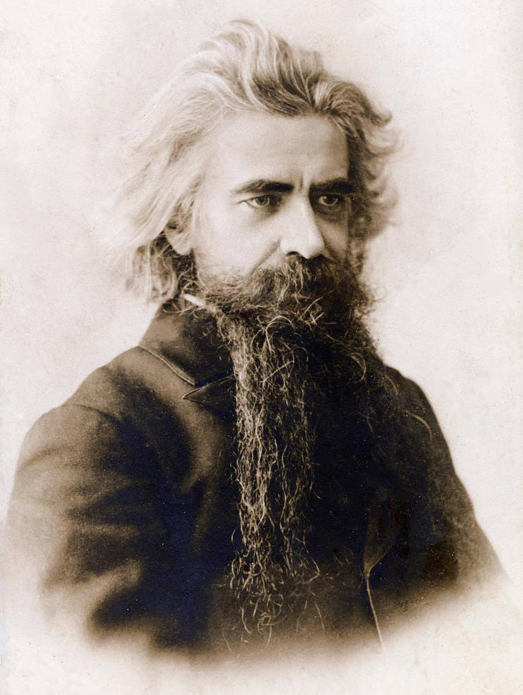
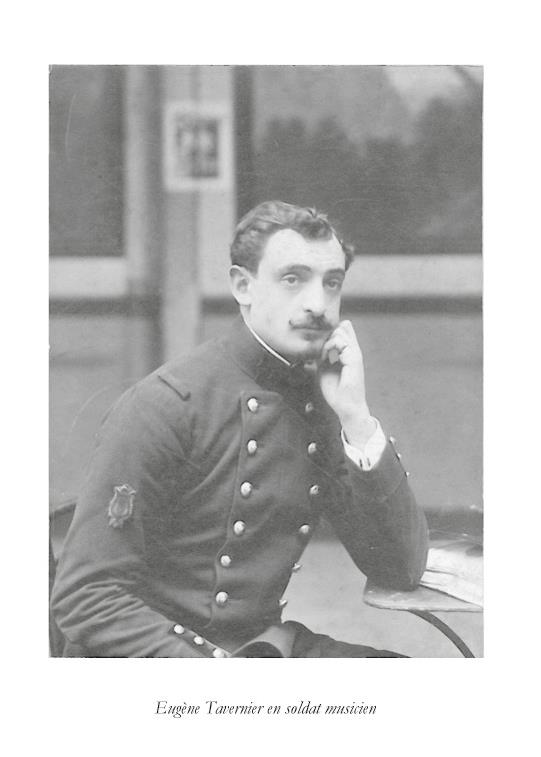
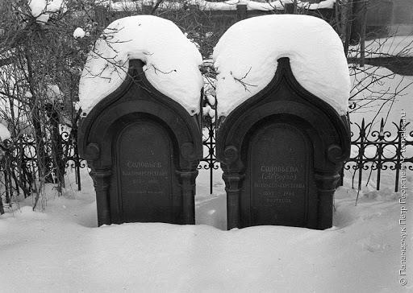
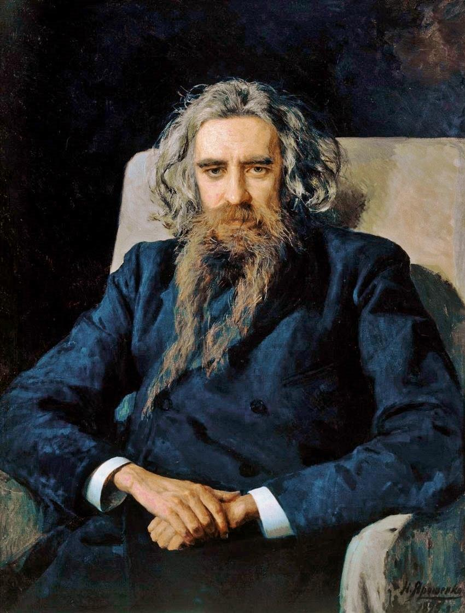

Vladimir Sergueïevitch Soloviev
L’HOMME
Vladimir Soloviev est un des noms illustres de la Russie contemporaine. Il est le plus grand philosophe de ce pays. Mort en 1900, après une carrière éclatante mais courte (ayant vécu moins de cinquante ans), il a laissé une œuvre philosophique, religieuse et littéraire de première importance: dix volumes compacts dont on vient de publier une nouvelle édition d’ensemble; quatre volumes de correspondance; un recueil de poésies; une traduction de Platon. Très célèbre de son vivant, il continue de posséder un prestige et d’exercer une influence qui ne cessent de s’accroître. La Russie studieuse et la Russie savante le lisent et l’admirent. Là-bas, dans les centres cultivés, se rencontrent des associations Soloviev, des cercles Soloviev, des comités Soloviev. Il inspire des analystes et des biographes très nombreux. Les Russes qui n’admettent pas sa doctrine sont, comme les autres, fiers de lui et heureux de proclamer sa gloire, qui s’est emparée de l’avenir. Non seulement on le célèbre, mais on l’aime. Tous les hommes qui l’ont connu gardent de lui un souvenir incomparable.
Aujourd’hui où, dans les exploits d’une guerre européenne, Russes et Français mêlent leurs âmes et leur sang, c’est, plus que jamais, un devoir et une joie de rendre hommage à Soloviev, manifestation magnifique du génie de sa noble race.
Il aimait beaucoup notre pays. Il en parlait et il en écrivait la langue à merveille. Même, il a, voici plus de vingt années, publié chez nous un important ouvrage en français La Russie et l’Église universelle, qui touche à plusieurs des sujets traités dans le livre russe dont je donne la traduction 1. Et cependant les deux livres sont très différents, du moins par la forme.
Leur comparaison met en évidence l’étonnante variété des dons que possédait Soloviev. Philosophe et apôtre, il était encore, comme écrivain, un artiste.
Les Trois Entretiens, imprégnés de philosophie et de théologie, ont l’attrait d’un exercice littéraire fort élégant, très dégagé et aussi, dans le meilleur sens du mot, mondain. Ils donnent l’idée la plus exacte de l’imprévu et du charme que présentait la conversation du grand philosophe russe.
J’ai fait connaissance avec Vladimir Soloviev pendant son deuxième séjour à Paris, qui dura du mois de mai au mois d’octobre 1888. Le 25 mai de cette année-là, j’avais eu la bonne fortune d’être invité à une réunion assez originale, dans les salons de la princesse Wittgenstein, née Bariatynski.
Soixante personnes environ, le plus grand nombre fourni par la société du faubourg Saint- Germain, un groupe de Russes à peu près naturalisés Parisiens, quelques Religieux d’origine étrangère, trois ou quatre publicistes de notoriété diverse, écoutaient une conférence que lisait en français un écrivain récemment arrivé de Petrograd. Il exposait L’Idée russe, sujet familier au monde littéraire et politique de là-bas; plus ou moins connu mais assez négligé par les Russes qui habitent ou qui fréquentent notre capitale; presque entièrement ignoré chez nous. Qui était ce conférencier?
Ses compatriotes eux-mêmes, sauf quelques-uns, savaient seulement qu’il était le fils d’un des meilleurs historiens de la Russie; qu’il avait occupé très jeune une chaire à l’Université de Moscou; que, dans des livres et dans des revues, il traitait principalement les questions philosophiques et religieuses; qu’il lui était arrivé maintes fois de soutenir des polémiques très retentissantes; que, s’il avait des adversaires de toute sorte, il possédait, en revanche, une multitude d’amis et d’admirateurs enthousiastes; qu’il passait pour aimer les théories paradoxales; et que, d’allures singulières, il menait une existence plus ou moins nomade.
Les Français le regardaient et l’écoutaient avec curiosité. Très grand, d’une maigreur et d’une minceur extrêmes, le port droit, l’attitude recueillie, il donnait tout d’abord l’impression d’un personnage qui n’aurait eu qu’une demi-réalité physique. Mais, sous la longue chevelure grisonnante qui encadrait son front large et harmonieux, s’épanouissait rapidement une puissance pénétrante. Ses yeux de myope, immenses et magnifiques, projetaient des rayons. La voix, étendue et pleine, était singulièrement nuancée. Gutturales, éclatantes, douces et même caressantes, toutes les notes se succédaient; ou bien elles composaient un seul accord, ainsi que dans les cloches d’un métal artistique et savant où les sonorités les plus graves sont traversées de vibrations argentines. Des manières humbles et presque timides, avec un profond accent d’énergie audacieuse et obstinée. Tel apparaissait Vladimir Soloviev.
Que venait-il nous dire? Et quel intérêt spécial pouvait présenter cette idée russe? Avait-elle donc plus d’importance ou plus de précision que l’idée française, anglaise, allemande ou italienne? Le discours, bien qu’il ne fût pas long, produisit une impression de puissance. Bientôt l’auditoire s’était rendu compte que le conférencier interprétait des sentiments qui touchaient à la nature propre d’un peuple et qui résumaient toute une crise intellectuelle et morale. Mais on ne soupçonnait guère en quoi la doctrine qu’il exposait avec tant d’élévation et d’éloquence se rapportait à nos intérêts et à nos besoins.
On comprendrait mieux chez nous, maintenant. Ou plutôt, on comprendra mieux. Car l’enseignement que nous apportait ce philosophe russe est devenu la leçon qui ressort de la crise formidable où, depuis deux années, le sang français coule à flots, et où se déchire, pour se reconstituer, l’âme de la France. Nous avons vu les aberrations et les monstruosités que peut engendrer une idée nationale développée sans mesure et nourrie d’une exaltation aveugle. L’idée allemande nous a montré de quelle folie furieuse peut être dévoré un peuple obsédé par l’amour de soi-même. C’est ainsi qu’est apparue au milieu de la civilisation l’idée allemande, qui prétendait être la civilisation supérieure et totale.
Un peuple peut donc, jusqu’à l’aveuglement et jusqu’à la frénésie, se tromper sur ses droits, sur ses forces, sur sa destinée. Le patriotisme, qui, éclairé et généreux, est si beau et si noble, subit des déviations et des déformations prodigieuses quand il se laisse aller à l’idolâtrie de soi-même. Dans un peuple, l’amour-propre démesuré peut exercer les mêmes ravages que dans un individu et le rendre, comme un particulier, injuste, déraisonnable, fou furieux.
Il y a aussi d’autres égarements, dans le sens inverse. Un peuple peut prendre en mépris et en horreur les sentiments et les traditions qui ont fait sa force. Nous commencions à être entraînés par cet aveuglement, lorsque Soloviev vint nous parler des devoirs d’une nation envers autrui et envers elle- même.
Alors, on voyait s’épanouir dans notre politique l’erreur fondamentale qu’une fausse philosophie, une fausse histoire et une fausse littérature cultivaient chez nous depuis un siècle. Beaucoup de Français s’étaient mis à détester le passé de leur pays. Sous prétexte de mieux aimer la France, ils voulaient forger une France qui, par l’âme, par les institutions et par les mœurs, fût tout le contraire de ce qu’elle avait été si longtemps. Persuadés qu’ils avaient pour toujours mis la main sur la vérité historique, philosophique et sociale, ils voulaient encore introduire dans les lois cette vérité prétendue; et ils appelaient la politique à leur aide.
La Russie, elle, subissait à la fois les deux emportements opposés. Il y avait chez elle, surtout depuis un demi-siècle, beaucoup de penseurs, de savants, de professeurs et d’écrivains qui travaillaient à la détacher de tout ce qui était russe et à la faire rompre avec sa tradition politique et religieuse. Ils prêchaient les sophismes fabriqués en Allemagne et en France. Ces hommes se glorifiaient d’être des Occidentaux.
En même temps, parmi les fidèles de la tradition russe, un très grand nombre représentaient la Russie comme une puissance à part, ayant en elle-même toute la morale, toute la civilisation, toute la religion, ne devant rien à personne et ne recevant rien de personne. Ceux-là, c’étaient les Slavophiles.
Soloviev combattait les exagérations et les aberrations des uns et des autres. Aux incrédules qui prêchent la morale et le patriotisme, il rappelait que les droits et les devoirs des hommes sont réglés par la loi divine et que la civilisation chrétienne ne peut subsister sans la doctrine chrétienne. Aux croyants qui s’enferment dans une infatuation exaltée, il montrait l’Église russe soumise à l’autorité politique nationale et isolée du centre de la vie religieuse universelle.
Cette attitude déconcertait les libres penseurs et scandalisait les croyants. Les philosophes, les savants et les autres occidentaux reprochaient à Soloviev d’être trop mystique; les croyants, d’être trop philosophe et trop occidental. Et tous ses adversaires s’accordaient à le trouver beaucoup trop indépendant d’allures dans les grandes choses ainsi que dans les petites. Peu d’hommes supérieurs furent comme lui en butte aux critiques contradictoires. Mais peu aussi eurent tant d’amis et d’admirateurs enthousiastes. Il en avait même une foule dans les camps hostiles à sa doctrine et à ses tendances.
Historien, philosophe et croyant, Soloviev envisageait la notion de patrie, et spécialement la destinée de la patrie russe, d’après les enseignements de l’histoire, de la philosophie, de la révélation chrétienne.
Aux auditeurs de Paris il disait: « L’idée d’une nation n’est pas ce qu’elle pense d’elle-même dans le temps, mais ce que Dieu pense sur elle dans l’éternité ».
«... En acceptant l’unité essentielle et réelle du genre humain, nous devons considérer l’humanité entière commue un grand être collectif ou un organisme social dont les différentes nations représentent les membres vivants. Il est évident, à ce point de vue, qu’aucun peuple ne saurait vivre en soi, par soi et pour soi, mais que la vie de chacun n’est qu’une participation déterminée à la vie générale de l’humanité.
« La fonction organique qu’une nation doit remplir dans cette vie universelle, voilà sa vraie idée nationale, éternellement fixée dans le plan de Dieu.
«... Le peuple russe est un peuple chrétien, et, par conséquent, pour connaître la vraie idée russe, il ne faut pas se demander ce que la Russie fera par soi et pour soi, mais ce qu’elle doit faire au nom du principe chrétien qu’elle reconnaît et pour le bien de la chrétienté universelle à laquelle elle est censée appartenir. Elle doit, pour remplir vraiment sa mission, entrer de cœur et d’âme dans la vie commune du monde chrétien et employer toutes ses forces nationales à réaliser, d’accord avec les autres peuples, cette unité parfaite et universelle du genre humain, dont la base immuable nous est donnée dans l’Église du Christ ».
Ces déclarations et d’autres analogues étaient nouvelles pour la plus grande partie de l’auditoire de 1888 réuni à Paris. Mais elles avaient déjà été maintes fois, par la parole et par la plume, développées devant le public russe, depuis une quinzaine d’années.
L’apostolat chrétien que Soloviev exerçait datait de la thèse même soutenue pour le doctorat, en 1874, lorsque le jeune philosophe n’avait que vingt et un ans. Dans cette première thèse, intitulée La Crise de la philosophie occidentale, se trouvait déjà une notable partie de la doctrine à laquelle allait être consacrée une existence de labeur passionné.
La soutenance de thèse eut un retentissement extraordinaire, non pas seulement à cause de l’originalité et de la grande valeur des idées qui étaient ainsi développées devant un public d’élite; mais surtout à cause de la puissance intellectuelle dont le jeune candidat faisait preuve. Ce fut un évènement. L’impression en resta vivante pendant bien des années; et la trace en subsiste dans l’histoire de l’époque.
Devant des centaines d’auditeurs, camarades d’études, professeurs, écrivains, le jeune candidat remporta un triomphe, salué dans les revues scientifiques et dans les journaux. En sortant de la séance, l’historien Bestoujev-Rioumine écrivait: « Si les espérances de ce jour se réalisent, la Russie possède un nouvel homme de génie: il ressemble à son père par ses manières et par sa tournure d’esprit; mais il le dépassera. Jamais, à aucune soutenance de thèse, je n’avais constaté une puissance intellectuelle si prodigieuse ». Une foule d’auditeurs répétaient avec Zamyslovsky: « C’est un homme inspiré; c’est un prophète! »
Ce prophète de vingt et un ans avait déjà une histoire. Son extrême précocité de pensée et de culture lui avait fait subir, dès l’adolescence, la crise qui, en général, ne se produit que dans la seconde partie de la jeunesse ou même plus tard.
À quatorze ans, il était devenu athée et, jusqu’à l’âge de dix-sept ans, il s’était débattu entre les systèmes les plus contradictoires, tous radicalement opposés à notre foi. Je l’ai entendu, dans une causerie intime, me raconter cette épreuve et parler du fol enthousiasme qu’il ressentait pour le matérialisme. C’était la maladie d’alors. Un prêtre français, qui a publié sur le grand philosophe russe un beau livre, très consciencieux et très intéressant, M. l’abbé d’Herbigny, a résumé avec délicatesse les phases de l’étonnante crise juvénile et aussi, d’ailleurs, de toute l’évolution accomplie par l’âme et par l’intelligence de Soloviev 2.
Au foyer familial, l’adolescent respirait une atmosphère de foi. Son père, historien éminent et chrétien très ferme, « aimait d’un amour passionné l’orthodoxie, la science et la patrie russe ». C’est Vladimir Soloviev lui-même qui, plus tard, l’a dit dans un article consacré à son noble père. Mais le jeune garçon, assoiffé de savoir, lisait en cachette presque autant que près des yeux paternels.
Notamment, il lut à la dérobée le livre tout matérialiste de Büchner, Force et Matière, dans le texte allemand; puis Strauss; puis, dans le texte français, la Vie de Jésus, de Renan; et d’autres ouvrages de même espèce.
Bientôt, par franchise et sans doute aussi un peu par orgueil, il déclara son incroyance radicale, que le père, attristé, sut ne pas déplorer et blâmer avec irritation, se bornant à des conseils de réserve et de prudence.
Faute de ces deux qualités, Vladimir Soloviev avait du moins une grande et rare franchise, un fondamental besoin de vérité, un insatiable désir d’apprendre et de connaître. Il continua d’étudier, comme d’ailleurs il devait étudier toute sa vie, absolument toute sa vie, avec la plus ardente et la plus puissante passion. Chose compréhensible mais tout de même inattendue, ce fut Spinoza qui le tira du matérialisme. L’impression produite par l’étude de Spinoza fut décisive. Elle explique le penchant assez sensible que Soloviev garda longtemps pour l’auteur de l’Éthique.
– Délivré de l’erreur qui asservit toute chose à la matière, Soloviev ne pouvait rester prisonnier de la doctrine qui confond le monde et Dieu. Un moment, il avait pris goût au bouddhisme, dont il se détacha bientôt, ne trouvant là ni principe de morale, ni principe de vérité.
– La parfaite connaissance de sa langue originelle, du latin, du grec, du français, de l’allemand, de l’anglais, de l’italien; plus tard, de la langue et de la littérature hébraïques; des philosophies anciennes ou modernes; son savoir théologique et historique, son inclination pour le symbolisme et pour la mysticité; ses dons de poète; tant de ressources le disposaient à s’engager dans les voies les plus différentes.
Déçu, mais non découragé, pas même fatigué, il procéda à un inventaire et à un classement des notions recueillies dans le cours de recherches si prolongées et toujours si actives.
Je cite volontiers M. l’abbé d’Herbigny pour compléter les détails que je tiens de Soloviev personnellement:
« Il fréquentait en même temps la Faculté d’histoire et de philologie, la Faculté des sciences physiques et mathématiques et l’Académie ecclésiastique de théologie. Outre ses professeurs préférés, P. D. Iourkévitch et V. D. Koudriatsev-Platonov, il consultait assidûment tous les grands philosophes de l’antiquité et des temps modernes. Il lisait et annotait dans leur langue originale Platon et Origène, Sénèque et saint Augustin, Bacon et Stuart Mill, Descartes et Bonald, Kant et Schopenhauer, Hegel et Schelling, enfin, parmi les Russes, Tchadaïev et Khomiakov. Surtout, il s’absorbait en de longues réflexions qu’il prolongeait souvent le jour et la nuit; ainsi élaborait-il sur de riches matériaux une pensée très personnelle. Enfin, la conclusion de tant d’études et d’efforts lui apparut dans le christianisme doctrinal et vivant. Incorporé déjà au christianisme par l’onction baptismale, il se donna d’une volonté pleine, forte, éclairée, n’aspirant qu’à être un apôtre, dédaigneux de toute ambition humaine, de tout égoïsme et de tout confort, résolu à ne pas se marier et à vivre chaste. C’était surtout comme professeur qu’il comptait d’abord mettre au service de l’apostolat religieux toutes les ressources des sciences. Professeur, il le fut très jeune (à Moscou et à Petrograd) et avec un succès incomparable; mais pendant fort peu de temps ».
L’impression extraordinaire produite dès les débuts a été conservée dans les souvenirs de nombreux témoins, notamment le magistrat académicien Koni, dont le récit est résumé par M. l’abbé d’Herbigny:
« Quand les leçons sur le théandrisme furent annoncées dans l’Université de Saint-Pétersbourg, il y eut une immense agitation parmi les étudiants de toutes les Facultés. Quel était cet insolent qui osait introduire un sujet religieux dans le sanctuaire de la science, la nuit dans la demeure du soleil? Un vrai complot fut organisé. Le tumulte devait être tel que le cours serait définitivement coulé dès la première leçon. Tous les étudiants étaient convoqués. Le grand jour arriva: la Faculté des Sciences, celle des Lettres et celle de Droit se trouvèrent au grand complet. Devant cet auditoire immense et bourdonnant, le professeur de vingt-cinq ans entre; on lui refuse les applaudissements habituels. Cependant tous les yeux se sont fixés sur lui; et déjà son visage, son regard imposent le respect. Quelques meneurs, parmi les philologues, essayent de lancer le tumulte; ils ne sont pas suivis. L’auditoire entier a été saisi par ce jeune homme qui lui parle de l’idéal chrétien, de la grandeur humaine et de l’amour divin pour elle. La grande voix, profonde et souple, du professeur retentit dans un silence religieux; elle rend hommage au Christ, elle le désigne comme le seul principe qui puisse instaurer le règne de l’amour et d’une vraie fraternité; elle convie tous les auditeurs à se laisser diviniser par Lui. Et, soudain, les applaudissements éclatent, unanimes: juristes, philologues, naturalistes, acclament celui qu’ils devaient honnir; ils se presseront désormais à toutes ses leçons, ils l’applaudiront jusqu’au bout ».
Et pourtant, dans le cours des six années où il figura parmi les professeurs officiels, il ne put occuper sa chaire que treize ou quatorze mois au total. C’était l’administration qui lui interdisait la parole; une première fois, provisoirement; d’une manière définitive, en mars 1881. Il avait alors vingt- huit ans.
Entre ces deux mesures on toléra qu’il fît un cours aux jeunes filles élèves d’un établissement supérieur; puis, de loin en loin, quelque conférence dans des milieux académiques. De même que les cours, ces rares conférences inquiétaient l’administration, religieuse ou civile. Soloviev réclamait la liberté pour les chrétiens dissidents; et parfois il indiquait le Saint-Siège romain comme le centre légitime et nécessaire autour duquel doivent s’unir les Églises du Christ.
Trois de ces conférences, prononcées d’année en année, ont pour sujet Dostoïevski. Le grand romancier et le grand philosophe avaient été très liés, quoique le premier eût trente-cinq ans de plus que le second. C’est sans doute cette différence d’âge qui, récemment, a fait dire à un écrivain anglais que Soloviev reconnut Dostoïevski pour son prophète. Mais il faut signaler là une erreur.
Assurément, le grand philosophe russe a donné à Dostoïevski le nom de prophète, ainsi qu’à d’autres personnalités qui agissaient beaucoup sur la masse des esprits; assurément, il lui a témoigné une affectueuse admiration; mais, comme philosophe, comme érudit et aussi comme écrivain, Soloviev possédait une puissance qui l’empêchait de se mettre à la suite du célèbre romancier. Il n’a suivi la trace de personne. Il était de force à conduire une armée d’intelligences; et cela, précisément, on l’a reconnu en Russie, dès qu’il exerça un rôle public. Dostoïevski lui-même voyait et montrait dans le jeune philosophe un apôtre et un prophète, un vivant symbole de la destinée réservée au monde russe.
Dans son dernier roman (non terminé), les Frères Karamazov, Dostoïevski mettait en scène, sous le nom d’Aliocha, Vladimir Soloviev comme la personnification de cette race intelligente, croyante, glorieuse.
Les conférences sur Dostoïevski valurent à Soloviev de nouvelles « journées triomphales ».
C’est le mot employé, à propos des leçons universitaires, par le vicomte de Vogüé, qui fréquenta l’Université de Moscou avant de publier l’ouvrage si intéressant le Roman russe.
Plus tard, dans un autre livre, Sous l’horizon, Vogüé a tracé du philosophe orateur, écrivain, apôtre, un émouvant portrait, dont voici quelques lignes:
« Son éloquence arrachait des acclamations à tous ses disciples. Nous suivions avec épouvante la parole audacieuse, comme on suit un acrobate sur la corde raide: quel faux pas allait le faire trébucher? Aucun. Savamment ramenée à l’idéal religieux, rassurante pour le plus rigide des conservateurs russes, la pensée de l’orateur côtoyait les précipices avec ces souplesses innées qui confondent toutes nos idées, dans le pays où l’on ne peut rien dire et où l’on peut tout dire. Le succès fut éclatant – éphémère comme ce cours bientôt suspendu ».
Dans les réunions intimes, dans un salon ou à table, Soloviev provoquait aussi l’admiration et l’enthousiasme, sans y songer le moins du monde. J’ai mentionné qu’il avait une multitude d’amis. Ceux- ci, à la lettre, se le disputaient. La formule: « Nous aurons Soloviev », était une invitation irrésistible et enviée.
Non point qu’il aimât se prodiguer, s’imposer ou beaucoup discourir. Son penchant fondamental était bien plutôt le recueillement, la méditation. Sa pensée ne savait pas s’accorder de répit pour se reposer ou se distraire. Fréquemment, on le voyait renfermé en lui-même, taciturne, assez mélancolique. Mais il était toujours prêt à payer de sa personne, en donnant, comme un prodigue, son érudition et ses idées, si l’entretien faisait surgir une affaire importante; ou dès qu’il y avait à remplir un devoir de convenance et de conscience. À cet égard, il était scrupuleux, non moins que généreux. Il se livrait tout entier.
Alors, la scène devenait très impressionnante. Humble d’attitude, effacé, perdu dans un rêve, il se transfigurait soudain. Ce grand corps maigre qui semblait défaillir se redressait d’un coup, comme soutenu par une armature d’acier.
Le visage rayonnant d’énergie et de lucidité, la voix pleine, Soloviev développait une démonstration où se suivaient, rapides, les raisonnements et les exemples. C’était un jaillissement d’idées, régulier et majestueux. Bien peu d’hommes ont été, à ce point, maîtres de leur pensée ardente.
Sur ses lèvres (comme sous sa plume) deux expressions revenaient fréquemment: « organique » et « déterminé »; car dans cet esprit rien ne marchait au hasard; et la fantaisie elle-même suivait une logique.
On le sentait bien; et pourtant, parfois, pendant quelques secondes, une inquiétude vague mais vive frôlait l’âme des auditeurs. Ici, il faudrait citer encore la page d’Eugène de Vogüé que j’ai reproduite plus haut, celle où sont rendues sensibles l’audace de l’orateur et l’appréhension de l’auditoire. Mais dans les salons de Petrograd et surtout de Paris 3, il ne s’agissait pas des risques administratifs que courait Soloviev. L’inquiétude était d’un autre genre; selon le point de vue, elle était moins grave ou beaucoup plus grave. À certains moments, rares et très courts il est vrai, le philosophe russe semblait être entraîné par son sujet, par sa passion pour la logique, par son imagination audacieuse. On se demandait si cet élan hardi et impétueux n’allait pas se heurter à la contradiction des chimères et se briser dans le vide. Tendu à l’extrême, le merveilleux instrument de la plus noble pensée paraissait sur le point de perdre son équilibre et de se rompre. Mais c’était l’instant juste où Soloviev, avec une aisance et une sûreté souveraines, savait se marquer une limite d’où il redescendait tranquillement vers les régions connues de la raison et de la foi. On avait senti un frisson; et tout de suite on se reprenait à contempler, avec une admiration rassurée toute entière, le retour rapide et calme de cette pensée qui venait de courir si loin et si haut. Alors, on ne connaissait point l’aéroplane, dont les hardiesses et les habiletés nous sont familières. C’est l’image qui convient aujourd’hui pour donner l’idée exacte de l’allure propre à la pensée de Soloviev.
On le ferait bien rire s’il était encore là et nous entendait parler de la sorte. Pour mieux railler les louangeurs, il se raillerait lui-même. Car il avait autant d’esprit que d’humilité, un esprit fait d’intelligence et de justesse. C’est par là qu’était facilement combattue et vaincue la mélancolique disposition qu’entretenait en lui l’habituel souci des plus grands problèmes. Cet esprit, qui aurait pu être mordant et qui s’y refusait avec une sensibilité charitable, sans s’interdire toutefois les effets amusants et gracieux, possédait l’ironie, ou plutôt le sens de l’ironie. Appliqué sans repos à étudier les lois et les mystères de la nature humaine et du monde, Soloviev savourait puissamment la vérité dont il faisait la conquête; mais une intelligence de cette vigueur et de cette finesse ne pouvait manquer d’apercevoir le contraste et la dérision qui guettent si obstinément les plus beaux succès. Alors, une soudaine et intense gaîté s’éveillait dans son âme et en débordait bruyamment.
Un ancien magistrat russe, qui est aussi un écrivain distingué, spirituel et délicat, M. N. Davydov, a, d’une manière bien intéressante, parlé de Soloviev dans un ouvrage intitulé Choses du passé. L’auteur, qui a été en relations avec un bon nombre d’hommes célèbres, a réuni quantité de souvenirs personnels. Seul, le premier volume a paru; mais M. Davydov a bien voulu me communiquer par avance un extrait du deuxième volume, en préparation: le chapitre qui concerne Soloviev. Là, il est question des rapports amicaux qui existèrent entre le grand philosophe russe et le comte Sollogoub. Celui-ci, mort depuis assez longtemps, poète humoristique et fantaisiste, lié avec Soloviev, non moins original que lui d’allures, mais nullement incliné au mysticisme ou à la philosophie, a jadis composé un poème ironique sur un voyage et sur certaines aventures de Soloviev en Égypte. C’est une satire où l’on voit Soloviev aux prises avec les artifices démoniaques. Il a finalement l’avantage, mais il reste marqué par les traits d’une incisive et constante raillerie.
Non seulement Soloviev ne s’offensa point de la caricature, mais il s’en divertit de bon cœur, prenant souvent lui-même l’initiative de plaisanter là-dessus; et il continua de témoigner à Sollogoub des sentiments très affectueux.
Il aimait à entendre des histoires comiques, surtout des histoires fantastiques. Lui-même en racontait plutôt deux qu’une, avec une malice ingénieuse qui en faisait ressortir quelque enseignement utile à tout le monde.
Sauf l’argent, le vice et la vanité, il ne méprisait rien de l’ordinaire existence; pas même la sottise, dont il s’amusait selon les occasions, se donnant volontiers, sans aucun orgueil, le luxe de la mettre en déroute à coups d’arguments historiques ou métaphysiques.
Ses divers biographes russes, notamment Velichtko, ont réuni d’abondants et curieux souvenirs qui montrent le grand philosophe provoquant la joie des réunions amicales les plus variées.
À Paris, pendant les séjours qu’il y fit, en 1888 et 1893, quelques amis et moi avons beaucoup bénéficié de son incomparable conversation. Les traits de l’esprit français lui allaient comme à un Parisien. Bien entendu, je pourrais, moi aussi, mentionner bon nombre d’incidents originaux.
Certain soir, X... et moi, qui étions encore célibataires, nous avions emmené notre cher Russe au restaurant. Nous avions eu soin d’éviter la salle commune, car, avec sa longue chevelure et sa longue barbe, l’une et l’autre un peu grisonnantes, avec son air de prophète, sa voix sonore et les sujets qu’il affectionnait (nous disions qu’il circulait dans l’Apocalypse comme chez lui), Soloviev risquait trop d’attirer l’attention, vulgaire ou grossière, des badauds et des imbéciles. Nous voulions d’autant moins l’y exposer que, s’il avait l’âme héroïque, cette âme était aussi très douce, jusqu’à la tendresse.
Donc, ce soir-là, suivant l’habitude, nous nous étions offert en cabinet particulier le philosophe théologien, apôtre et ironiste. Après les détours d’une conversation abandonnée, nous avions, je ne sais plus comment, conduit notre génial et délicieux compagnon à nous parler de la fin du monde! Survint le garçon, accomplissant son office. L’auditeur fortuit éprouva une extrême surprise des paroles prononcées par notre invité, si différentes des propos qui se tiennent d’ordinaire en ces lieux. Sans doute, la figure attentive et animée que nous faisions, X... et moi, acheva de bouleverser le garçon. Il crut avoir affaire à trois fous et faillit lâcher le plat! À la fin du dîner, je me rappelai ce détail et le signalai à Soloviev, qui en ressentit une gaîté éclatante. Si, au lieu d’être un convive, notre philosophe eut été l’amphitryon, il aurait certainement triplé ou décuplé le pourboire. Car telle était sa manière.
En fait de générosité, il dépassait non pas seulement toutes les limites, mais encore toutes les invraisemblances. Il donnait tout ce qu’il avait: son argent et son travail. Pour lui, l’argent n’avait de valeur que par la joie qu’on se procure en le distribuant, autant que possible, à pleines mains. Le modeste patrimoine qui lui était venu de sa famille avait fondu bientôt sous le soleil d’une charité sans mesure. Les profits qu’il retirait de son labeur acharné avaient continuellement le même sort.
Depuis que les rigueurs administratives le tenaient écarté du professorat, Soloviev vivait de sa plume. En composant ses livres, il collaborait à des revues philosophiques et littéraires (notamment les Questions de philosophie et de psychologie; le Messager de l’Europe; la Semaine, etc.), au grand dictionnaire encyclopédique Brockhaus-Ephron, dont il rédigea presque toute la partie philosophique; et à plusieurs journaux. Le mérite supérieur de tout ce qu’il écrivait, sa célébrité, la curiosité et la sympathie qu’il inspirait, tout cela rendait ses travaux productifs. Il aurait pu vivre tranquillement et avec un peu de confort. Mais c’était bien le moindre de ses soucis! Il avait un grandiose mépris des calculs personnels dont se compose si souvent l’existence dite pratique. Il ne put jamais s’astreindre à la régularité d’un domicile ordinaire. Une partie du temps, il logeait chez l’un ou l’autre de ses amis innombrables. Ce qu’il aurait pu économiser ainsi passait aux domestiques, sous forme de pourboires princiers. Ou bien, il habitait dans un hôtel. Là, une foule de solliciteurs l’assiégeait. Littéralement, il se laissait dépouiller de tout, même du temps si précieux dont il avait si grand besoin pour son labeur. Il faisait des courses et des démarches au profit de besogneux indiscrets. Il avait dans les rues toute une clientèle qui le rançonnait.
Sa famille et ses amis essayaient vainement de le garantir contre l’incroyable exploitation dont il se rendait victime. Pour faire quelque large aumône, il allait jusqu’à emprunter de l’argent, qu’il remboursait par la production d’un travail supplémentaire.
Il se nourrissait de thé et de légumes; mais aux amis qui venaient le voir, ou qu’il invitait, il offrait les plats et les vins les plus coûteux. On le grondait sans le fâcher, ni, bien entendu, sans réussir à le corriger. Les complications dans lesquelles il se débattait étaient oubliées par lui, dès qu’il avait l’occasion de faire plaisir à quelqu’un. Là-dessus, ses biographes russes ont recueilli un grand nombre d’anecdotes.
J’emprunte à Velitchko le récit de la suivante. Un soir, chez Velitchko, tout un cercle d’amis attendait Soloviev pour dîner, à six heures. Sept heures, sept heures et demie avaient sonné sans que celui-ci eût encore paru. La physionomie des convives s’allonge, la cuisinière fulmine, la maîtresse de maison est sur le point de pleurer. Serait-il arrivé un accident? Velitchko part en recherche, naturellement d’abord vers l’Hôtel de l’Europe, où loge Soloviev, au cinquième étage. Le grand philosophe est chez lui, sain et sauf physiquement, mais dans quel désarroi!...
Plié sur un divan, les pieds plus haut que la tête, plus pâle que d’ordinaire, les yeux à demi fermés. Il sort de sa torpeur pour dire qu’il a une horrible crainte d’avoir offensé et irrité les personnes par lesquelles il s’est fait attendre si longtemps. Velitchko lui ayant assuré qu’on ne lui en veut pas du tout, mais qu’on est inquiet, le voilà soulagé, réconforté, réjoui. Il avait eu pendant la journée une série de mésaventures, toute une épopée tragi-comique, qu’il raconta aussitôt. Il était sorti de bonne heure pour faire des courses, et d’abord acheter des bottines.
Dans le magasin, le choix est long. On ne trouve pas la pointure qu’il faut. Il s’aperçoit que le commis se désole de ce remue-ménage inutile. Désolé à son tour, il prend au hasard une paire de belles bottines et les chausse tout de suite, puisque, le soir, il doit aller dans le monde. Les vieilles bottines, il les enveloppe d’un papier et les emporte sous le bras. Par économie (il ne lui restait que quelques roubles) et aussi pour élargir les bottines neuves, qui sont trop étroites, il s’en va à pied dans Vasili Ostrov, à l’imprimerie Stassulevitch, où s’imprime un de ses livres. En route, il rencontre coup sur coup des mendiants, auxquels il distribue ses derniers roubles, sa bourse, son portefeuille vide, son mouchoir de poche, et les vieilles bottines.
– Heureusement, je n’avais pas ma montre, ajoute-t-il avec un soupir.
– Pourquoi heureusement? Est-ce que vous auriez voulu la donner à un miséreux? – Non, c’est un souvenir de mon père. Je ne l’aurais pas donnée; mais ensuite, j’aurais eu un regret.
– Après une longue course, toujours à pied par nécessité, et ses bottines étant devenues un instrument de torture, le pauvre philosophe rentre à l’hôtel, désolé, épuisé, anéanti, ne sachant que devenir. Plus de quoi se payer une voiture.
– Mais, mon cher Vladimir Serguiévitch, vous n’aviez qu’à venir chez moi en voiture et dire à mon concierge de payer le cocher.
– Alors, avec un rire éclatant, Soloviev de s’écrier: – Comme c’est simple! Et je n’y ai pas pensé! Il est vrai que je n’ai rien mangé depuis ce matin.
– Alors, allons dîner, ou plus exactement souper, à l’heure qu’il est. Je vous régalerai du céleri que vous aimez tant.
– Mon cher, ce serait parfait si j’avais encore mes vieilles bottines. Ces maudites-là me font mal. D’ailleurs, peu importe, je vais en venir à bout.
– Sautant du divan, il prend un canif, et aux endroits où elles le gênaient trop, fend les bottines toutes neuves. Ensuite il va dîner et charme tous les convives par son aimable et fantastique gaîté. Il fut tout le temps plein de verve...
Il y aurait de quoi remplir un volume avec des historiettes de ce genre. La plupart montrent en entier le personnage: son mépris des choses vulgaires, sa passion pour les choses intellectuelles et morales, son immense bonté, son imprévoyance, sa délicatesse, son esprit et son humilité. Il ne supportait point d’être traité comme un homme supérieur. Il disait, il m’a dit à moi-même, qu’on ne vaut véritablement que par la droiture et par la bonté. C’était sa règle constante, sans distinction de temps ou de lieu.
À Paris, Soloviev était tel qu’à Petrograd et à Moscou. Il employait à des amabilités et à des générosités magnifiques l’argent qu’il avait gagné en travaillant plusieurs mois toute la nuit; dispos et en train après d’incroyables excès de labeur; menant de front la composition d’ouvrages philosophiques, de poésies, d’articles de revue, et se nourrissant de thé et de légumes. J’ai vu souvent ce myope, au risque de se faire écraser, traverser la rue afin de porter une large aumône à des mendiants, qu’il devinait plutôt qu’il ne les apercevait, et courir après eux pour leur dominer des pièces blanches ou de l’or.
L’impression qu’il produisait est bien résumée par ces mots qu’une de ses sœurs 4, les ayant maintes fois entendus, a recueillis dans une tendre et charmante notice familiale: « En présence de votre frère on devenait meilleur; la bassesse de pensée ou de sentiment avait honte devant lui ».
Il inspirait la plus vive affection même à des gens qui ne partageaient rien de ses opinions philosophiques ni de sa foi religieuse. Quand il mourut (31 juillet 1900, le 13 août de notre calendrier), j’étais sans nouvelles de lui depuis assez longtemps.
En voyage, sur le quai d’une gare, je rencontrai un Russe que je voyais parfois à Paris, esprit distingué, très lettré, excellent homme, libre penseur radical. Je lui demandai s’il avait récemment entendu parler de notre grand ami. Il me répondit d’abord par un geste tout découragé, puis par ces mots prononcés d’une voix tremblante, avec des larmes dans les yeux: – « Vous ne savez pas?… Hélas! Il est très malade… peut-être mourant… peut-être… » Nous étions tous deux consternés. Il m’expliqua que ses journaux ne l’avaient pas suivi. Il comptait avoir bientôt des lettres. Deux jours après, il m’envoyait le Novoë Vremia, qui justifiait notre angoisse en nous apportant la désolation: « Skontchalsia Vladimir Soloviev! Vladimir Soloviev est mort! »
Il avait quarante-sept ans et demi.
Le 15-28 juillet, en route pour aller voir sa vieille mère, Soloviev avait manifesté un affaiblissement brusque. Installé chez son ami le prince Serge Troubetzkoï, à Ouskoië (où venait de le conduire M. Davydov), il vit ses forces s’épuiser rapidement malgré les soins les plus empressés. Les poumons, le cœur, le foie étaient atteints. Bientôt, se rendant compte que nul remède ne serait efficace, il fit appeler le prêtre, se confessa et reçut la communion. Il gardait sa connaissance, calme, recueilli, confiant. On l’entendait prier avec ardeur. Puis, vinrent des accès de délire, pendant lesquels il parlait français, allemand, anglais, hébreu. Ayant repris sa lucidité, il adressa aux personnes qui l’entouraient cette recommandation imprévue: « Empêchez-moi de dormir et faites-moi prier pour le Peuple juif. Je dois prier pour lui, beaucoup »; et il se mit à lire un psaume en hébreu.
Le rôle historique, moral et politique des Juifs, ce qu’il appelait « le processus judéo-chrétien », était un des sujets qui avaient souvent inspiré ses travaux et ses méditations. Ainsi s’éteignit cette existence vouée toute entière au bien et consumée dans un labeur ininterrompu.
Certaines circonstances qui accompagnèrent les derniers moments, et certaines autres qui s’étaient produites quatre ans plus tôt, ont plusieurs fois provoqué de vives discussions dans les universités, dans les salons et dans les journaux russes.
Soloviev était-il devenu catholique? On devait croire qu’il l’était, si l’on en jugeait d’après l’enseignement public distribué par lui avec une longue et ferme persévérance.
Le grand apôtre de la foi chrétienne ne pouvait manquer d’être un zélé serviteur de l’Église universelle. Connaissant très bien les besoins et les droits de l’Église universelle, il souhaitait ardemment et, de toutes ses forces, il favorisait l’union des différentes Églises chrétiennes. Or, en fait d’union de ce genre, il n’y a de positive, de légitime et de sérieuse que celle qui s’accomplit autour du Pontife romain, c’est-à-dire sous l’autorité du Pape. Cela, aussi, Soloviev l’a reconnu et déclaré maintes fois, non pas seulement dans le livre français intitulé La Russie et l’Église universelle, mais encore dans d’autres ouvrages, et même dans La Justification du Bien, qui est surtout consacré à l’exposé des principes de la morale.
Sur le même sujet encore, il eut des polémiques avec de hauts représentants de l’Église russe. En outre, il entretenait des relations avec un certain nombre de catholiques, notamment avec le P. Pierling et le P. Martinov, de la Compagnie de Jésus; avec le P. Tondini, barnabite; avec M. Anatole Leroy-Beaulieu.
C’est dans l’habitation de campagne de ce dernier, près de Paris, qu’il acheva de rédiger le livre français La Russie et l’Église universelle. Surtout, il était lié avec l’archevêque catholique de Diakovo, l’illustre Strossmayer, dont il fut l’hôte plusieurs fois. Ici se place, d’une manière assez naturelle, une historiette finement contée an cours d’une étude sur Mgr Strossmayer, étude publiée en 1905 dans le Correspondant, par un écrivain français de beaucoup de talent et de beaucoup d’esprit, M. Charles Loiseau 5. L’anecdote est bien caractéristique de l’allure extérieure et de l’allure morale propres à Soloviev:
« Le commerce de ces deux esprits (Strossmayer et Soloviev), qui n’avaient à s’envier ni l’érudition ni la puissance, offrait je ne sais quoi de noble, de fraternel et de touchant, dont l’impression reste ineffaçable chez ses témoins.
C’est à Djakovo qu’échut à Soloviev une de ces aventures symboliques dont il assurait d’ailleurs que sa vie était parsemée. Noctambule impénitent, il arpentait une nuit le grand corridor dallé que tous les hôtes de Djakovo connaissent bien et sur lequel donnent une douzaine de chambres. Après avoir convenablement ruminé quelque problème métaphysique, le philosophe s’aperçut que retrouver la sienne était un autre problème. C’était un de ces simples de cœur qui ne se font pas honneur de leur distraction, mais qui en conviennent et prient qu’on la leur pardonne. Avec prudence, il essaya d’ouvrir une porte, puis une seconde. À la troisième qui lui résista, il comprit que sa méthode empirique n’était pas assez discrète. Il prit dès lors le parti de continuer sa promenade. Vers le matin, il s’aperçut qu’une des portes devant lesquelles il avait passé cent fois était entrebâillée; et de certains signes lui révélèrent qu’il était enfin arrivé chez lui.
Au déjeuner, l’aventure défraya la conversation. Et, comme Strossmayer le plaisantait doucement, il lui répondit de sa voix posée et profonde: « Que de fois, à la recherche du vrai, ou dans l’incertitude de la détermination morale à prendre, il nous arrive d’hésiter devant une porte que nous croyons bien close et que nous n’avons qu’à pousser! »
Incliné vers Rome et ferme à défendre les droits supérieurs de la Papauté, il restait néanmoins, de cœur et d’âme, et aussi pour la pratique des sacrements, attaché à l’Église russe, qui, elle, demeure séparée du Pape. N’était-ce pas une contradiction positive et flagrante?
Aux yeux de Soloviev, non. Il invoquait surtout deux arguments: l° la validité des ordinations sacerdotales conférées par l’Église russe, validité que Rome a toujours reconnue; 2° l’absence de toute condamnation générale prononcée par Rome contre l’ensemble de l’Église russe. La séparation de ces deux Églises, disait-il, n’existe qu’à l’état de fait; et ce fait résulte, non pas d’un conflit de doctrines, mais d’un amas de préjugés.
Donc Soloviev, attaché à l’intégralité des doctrines romaines, y compris les décrets du concile du Vatican tenu en 1869-1870; y compris, par conséquent, le dogme de l’infaillibilité pontificale, professait la foi catholique doctrinale et conservait ses liens d’origine avec l’Église russe.
Bien singulière en apparence était la situation du grand philosophe. D’autant plus singulière encore que, généralement, des deux côtés on ne se rendait pas compte de la véritable raison pour laquelle il s’y maintenait.
Des catholiques russes s’offraient à solliciter pour lui et à lui faire obtenir la permission de vivre secrètement en catholique. Mais il n’avait nul besoin du secret; et il n’en voulait pas: le catholicisme, il le professait tout haut, bravant les préjugés de la foule et l’hostilité de l’administration.
Quant à rompre avec son Église russe, il s’y refusait en raison des trois motifs suivants. Il aimait cette Église où il était né. Il ne voulait pas la renier; il ne voulait pas embrasser le rite latin.
– Ensuite, il pensait fermement que, pour agir sur elle, pour la tourner vers Rome, il devait continuer d’appartenir à elle. Séparé du public, des amis et des adversaires auxquels il s’adressait, il prévoyait qu’il perdrait aussitôt son influence. Loin d’eux, disait-il, on ne l’écouterait plus que d’une oreille distraite et avec une défiance qui rendrait inutile son continuel effort.
– Enfin, comme je l’ai indiqué et comme lui-même le déclarait dans ses livres et dans ses discours, il affirmait que l’Église romaine et l’Église gréco-russe étaient en communauté de foi et qu’entre ces deux Églises il n’y avait pas eu de rupture complète et véritable.
Son Église ne lui sut point gré d’un tel exemple de fidélité. Depuis l’année 1892, le clergé russe avait reçu l’ordre de refuser la communion à Soloviev. Isolé au point de vue des sacrements, tel était donc le sort de l’apôtre de l’union. Ce fut ainsi jusqu’en 1896.
Alors, dans une circonstance dont l’essentiel seul est connu, Soloviev réalisa, en ce qui le concernait personnellement, la conclusion de ses efforts. Il y a sur le sol russe une Église non latine qui pratique le rite oriental gréco-slave et qui est unie à Rome. Elle porte le nom significatif d’Église uniate. Le 18 février 1896, Soloviev reçut la communion des mains d’un prêtre appartenant à cette Église gréco- russe, elle-même unie à Rome.
Dans le livre dont j’ai parlé, M. l’abbé d’Herbigny a publié les détails qu’il a pu recueillir à cet égard et que je résume 6. Il n’y eut point d’abjuration proprement dite. Soloviev lut sa profession de foi, en y ajoutant cette déclaration déjà publiée par lui dans l’ouvrage intitulé La Russie et l’Église universelle:
« Comme membre de la vraie et vénérable Église orthodoxe orientale ou gréco-russe, qui ne parle pas par un synode anti-canonique ni par des employés du pouvoir séculier... je reconnais pour juge suprême en matière de religion... l’apôtre Pierre, qui vit dans ses successeurs et qui n’a pas entendu en vain les paroles du Seigneur ».
Ainsi était précisée et complétée la réponse que Soloviev avait faite maintes fois à ceux qui l’interrogeaient sur sa confession religieuse: « J’appartiens à la vraie Église orthodoxe, car c’est pour professer, dans son intégrité, l’orthodoxie traditionnelle que, sans être latin, je reconnais Rome pour centre du christianisme universel ». Là-dessus, en Russie, se produisirent beaucoup de discussions; ailleurs, des commentaires variés; et aussi la rumeur, d’origine inconnue, d’après laquelle certains amis croyaient pouvoir espérer que Rome le nommerait évêque. Ce qui semble fondé, c’est, en somme, sa participation aux sacrements par le ministère d’un prêtre de l’Église uniate. Quand, à l’improviste, le philosophe chrétien s’éteignit dans la maison de campagne du prince Troubetskoï, le seul prêtre qu’on eut le temps d’appeler fut le curé du village d’Ouskoïe, représentant de l’Église officielle.
Pendant les premiers mois qui suivirent la mort de Soloviev, il y eut sur lui, dans les revues et dans les journaux russes, une quantité d’articles de tout genre et qui tous contenaient l’hommage du regret et de l’admiration.
Études analytiques sur les ouvrages et sur les tendances du défunt, biographies, anecdotes, la collection de ces documents remplirait plusieurs volumes. Ce devint tout de suite une habitude de citer, à propos des sujets les plus différents, le nom, la pensée, la parole de Soloviev. Dix ans après sa mort, les littérateurs, les philosophes, les étudiants célébraient sa mémoire par une fête solennelle; et, dans le Novoë Vremia, M. Pertsov pouvait dire avec une entière exactitude: « Il semble qu’il écrivait encore hier. » On le reconnaissait dès lors pour l’écrivain « le plus contemporain ». Et, depuis, son influence n’a pas cessé de gagner en profondeur comme en éclat. Cette gloire qu’il possède, il ne l’avait point recherchée.
Je puis dire davantage. Il savait qu’il la posséderait... et il la dédaignait d’avance. En 1893, à Paris, un soir, il me communiquait confidentiellement ses impressions au sujet des difficultés qu’il rencontrait pour faire avancer la grande idée à laquelle il s’était consacré. Il me découvrit la cruelle lassitude qui, par instants, menaçait de l’envahir.
Je lui rappelai ses succès. J’ajoutai que certainement on continuerait de lire ses livres, et que, dans l’avenir, on les lirait encore plus qu’à l’heure où nous étions.
Il demeura une minute silencieux et sombre; puis, avec un sourire mélancolique et froid, il murmura: « Oui, j’aurai la gloire... » Après un soupir, il changea de conversation. Je le quittai, le laissant se livrer au travail que, selon sa coutume, il allait prolonger pendant la plus grande partie de la nuit.
Si, de temps à autre, il ressentait la lassitude morale, il n’en devenait jamais la victime. La force d’âme reprenait vite le dessus.
Maintes fois, j’ai dit que Soloviev était doux et tendre comme une jeune fille, mais courageux et puissant comme un lion. Je suis sûr de n’avoir exagéré en aucune manière. Sous son exquise douceur palpitait une puissance superbe. Sa gloire personnelle, qu’il méprisait, rendra durable et fécond l’effort magnifique déployé par lui pour le triomphe du bien et de la vérité.
L’ENSEMBLE DE SON ŒUVRE
C’est l’œuvre d’un philosophe, d’un croyant et d’un apôtre.
Sa philosophie concerne principalement la morale; et cette morale, édifiée sur une vaste doctrine métaphysique, est toute pénétrée, vivifiée, animée par l’esprit et par les principes de la foi chrétienne.
D’ordinaire, on ne considère pas comme de véritables philosophes les penseurs qui écrivent sur la religion. Ils passent pour ne pas traiter la philosophie proprement dite avec assez de soin, ni assez de vigueur, ni assez d’indépendance. Ce reproche est très souvent injuste. En tout cas, il ne peut être adressé à l’homme dont je parle. Rempli de foi religieuse et fortement incliné au mysticisme, Soloviev savait exposer les questions philosophiques d’après la méthode non seulement la plus éloquente, mais aussi la plus stricte. On en a eu la preuve maintes fois et même dès les débuts. La thèse par laquelle il conquit d’un coup sa première célébrité est une démonstration vaste, originale et rigoureuse.
À vingt et un ans, Soloviev possédait la complète connaissance de la philosophie universelle; et il pouvait exposer l’histoire des principaux systèmes, anciens ou modernes, occidentaux ou bouddhistes, en outre, critiquer, avec une élévation et une force admirables, des hommes tels que Spinoza, Kant, Schopenhauer, Comte, Stuart Mill, etc. J’ai noté qu’il avait d’abord été très attaché à Spinoza. Cependant, il sut bientôt dévoiler les erreurs du panthéisme en général et celles du maître lui-même. Il avait aussi été disciple de Kant et de Schopenhauer. Graduellement, il échappa à leur influence.
Il a souvent discuté et polémiqué; mais ses réfutations, même celles qu’il composait avec le plus grand soin, ne sont, dans son œuvre, qu’une partie secondaire. Il ne détruisait que pour construire. Cet inflexible adversaire des erreurs répandues par le positivisme a construit une doctrine morale qui, tout en s’appuyant sur la critique et sur le mysticisme, mérite cependant d’être appelée positive. Elle est même plus positive que toutes les autres constructions ainsi dénommées. En effet, elle envisage et harmonise les divers aspects de la vie humaine, individuelle, familiale, politique, sociale; et elle accorde tous ces aspects avec les lois si nombreuses qui constituent l’existence du monde et qui donnent au monde une signification compréhensible pour l’homme et digne de Dieu.
Grand métaphysicien, Soloviev est aussi un grand théologien et un grand mystique. On peut dire, avec une entière justesse, qu’il est toujours tout cela; et voilà de quoi se compose la haute et forte originalité de son enseignement.
Ajoutons tout de suite que Soloviev, habitué à développer les plus larges vues d’ensemble, prend néanmoins un constant souci de distinguer les caractères et les limites de chacun des sujets qu’il groupe dans le même cadre. Par exemple, il place sous la loi du Christ le monde matériel et la vie physique, de même que l’intelligence, la consciente et la morale; mais il traite ces différents sujets d’après la méthode qui convient pour chacun d’eux. Écoutez-le disserter sur les atomes ou sur la logique, sur l’art ou sur les passions, sur le dogme ou sur la mystique: vous croirez entendre successivement plusieurs spécialistes. Pourtant, c’est la même voix qui résonne; c’est le même esprit qui enseigne tant de choses, sans rien confondre.
Sans rien confondre, certainement; mais, certainement encore, sans rien diviser de tout ce qui doit rester uni. Car si Soloviev distingue toujours, toujours aussi, avec la même attention, il rappelle et met en lumière le principe supérieur par lequel sont rattachés les uns aux autres les domaines les plus opposés et, en apparence, les plus séparés. Pas de séparation radicale; du moins, pas d’intervalle ou d’abîme que ne puisse combler la loi de la vérité et du bien, c’est-à-dire, en un mot, le christianisme. Sans confusion et sans division, cette formule est très chère à Soloviev. Elle se rencontre souvent dans ses ouvrages, à propos de la foi comme à propos de la morale, de l’économie politique, des sciences naturelles ou d’autres sujets encore. Tout en respectant scrupuleusement les frontières de chaque catégorie de lois et de phénomènes, il veille à ce que rien ne reste détaché du principe par lequel il explique le monde. Le monde, il le définit et le résume d’après l’antique formule de la scolastique chrétienne c’est-à-dire la variété dans l’unité.
On a appelé Soloviev un « conciliateur ». Mais ce mot, insuffisant, est, au fond, très inexact. Soloviev a fait beaucoup plus et beaucoup mieux que ne firent autrefois les philosophes alexandrins et, au commencement du siècle dernier, les éclectiques qui suivaient la voie tracée par Victor Cousin. Dans l’éclectisme ancien ou moderne s’associaient des théories généralement contradictoires. Celles qui s’accordaient à peu près les unes avec les autres n’étaient pas liées entre elles par un même principe fondamental. Bref, l’éclectisme formait un assemblage souvent incohérent, toujours dépourvu de stabilité, de vie, de force génératrice. Soloviev avait l’esprit trop élevé et trop puissant pour se contenter d’une conciliation extérieure et incomplète. Il voulait non pas seulement concilier mais unifier. L’unification qu’il avait en vue n’était pas du tout une combinaison matérielle, étroite et sèche.
Il voulait mettre les doctrines, les théories, les opinions, les aspirations en contact avec l’éternelle et universelle Source de vérité, de lumière, d’activité et de vie; c’est-à-dire: unifier pour vivifier.
Il a écrit des pages merveilleuses sur l’unité active et féconde, qu’il appelle l’unité plurale et qu’il emprunte au dogme de la TriUnité divine. Là s’épanouit l’étonnant accord que réalisaient en lui le mathématicien, le philosophe et le mystique. C’est pourquoi on a pris parfois Soloviev pour un élève de Pythagore; d’autres fois, pour un adepte de la gnose (il avait en effet beaucoup pratiqué les gnostiques); ce qui n’a pas empêché qu’on le rangeât aussi parmi les disciples de Schelling. Il y avait en lui plus ou moins de cela... et d’autres choses encore. Surtout il y avait la foi chrétienne, foi intense, immense, approfondie, qui nourrissait sa pensée, son cœur, son talent de prosateur et de poète, sa philosophie, sa métaphysique, son zèle de réformateur et d’apôtre.
L’esprit de foi le possédait et l’animait entièrement. C’est le trait principal de son œuvre et de sa personnalité Cela est reconnu dans les études critiques ou biographiques qui ont été consacrées à Soloviev par des auteurs nombreux et différents, entre lesquels on distingue le prince Serge Troubetskoï, Kousmine-Karavaev, Slonimski, Speranski, Koni, Loukianov, Boulgakov, Velitchko; et dans l’étude si remarquable, large et pénétrante que M. Radlov a jointe à l’édition des œuvres complètes.
Ces auteurs, et d’autres aussi, s’accordent à appeler Soloviev un penseur croyant et mystique. En effet, il était et voulait être cela. Il envisageait toutes choses d’après la divinité, l’enseignement et la résurrection du Christ, et il prenait un soin continuel de rattacher au Christ, morale et science, individus et sociétés, vie présente et vie future. Son mysticisme s’appuyait sur la philosophie, sur la théologie, sur l’histoire et, en outre, offrait un caractère essentiellement pratique.
Pratique, c’est le mot juste. Car Soloviev avait toujours eu vue l’application de la doctrine religieuse dans l’ensemble et dans les détails de l’existence ordinaire. C’est si vrai que, parmi ses écrits, nombreux et variés, celui qu’il a composé avec le plus d’attention et de recueillement est un vaste traité de morale intitulé La Justification du Bien. Ne nous étonnons pas si le titre est original. Soloviev était toujours original.
D’ailleurs, les dernières lignes du livre en indiquent complètement la signification. « Mon but, dit l’auteur, est de montrer que le Bien est la vérité; que le Bien est la voie de la vie, voie unique, voie juste et sûre, en tout, jusqu’au bout et pour tous ».
L’ouvrage expose en détail les fondements philosophiques de la moralité et du devoir et retrace avec ampleur « l’action du Bien à travers l’histoire de l’humanité ». La première édition de ce grand volume fut épuisée dans l’intervalle de seul mois. À la fin de la préface de la deuxième édition (1898), l’auteur déclarait qu’il venait de relire cinq fois son ouvrage en entier pour le corriger et l’éclaircir. Il avait voulu, comme il l’affirmait lui-même, éviter le reproche de faire avec négligence l’œuvre du Seigneur. Or, loin d’avoir rien négligé, il avait prodigué toutes ses ressources et tous ses soins pour accomplir le travail qui lui était si cher. Là, vraiment, le grand penseur russe a employé tout son génie, toute son âme. Car ses plus ardentes aspirations avaient pour but le progrès de la morale théorique et pratique.
Une analyse de La Justification du Bien demanderait une longue étude. Je dois me borner ici à en indiquer les lignes principales. D’abord, l’auteur montre la nécessité, pour les hommes raisonnables, de chercher et de comprendre le sens de la vie qui leur a été donnée. La vie ne peut se dispenser d’être morale. La moralité, c’est le progrès continuel dans la voie du Bien. Le Bien, par essence, c’est Dieu, de qui dérivent tous les autres biens. Nous sommes assujettis à la matière, mais nous sommes aussi assujettis à la loi divine; et notre moralité représente l’effort que nous déployons pour faire prédominer en nous le bien sur le mal. Ce Bien que nous nous appliquons à conquérir et à nous incorporer nous est antérieur et supérieur. C’est le Bien absolu, c’est Dieu.
Le devoir nous est imposé par Dieu. (On voit tout de suite que la doctrine morale de Soloviev est en opposition radicale avec celle de Kant. Soloviev s’est, de plus en plus, détaché de l’influence de Kant, influence qu’il avait d’abord profondément ressentie.)
Dans l’examen détaillé des devoirs, le philosophe russe réfute la fausse philosophie qui prétend séparer la morale, non seulement de la religion, mais aussi de la métaphysique. Puis, il étudie l’opposition apparente et le lien réel qu’on observe entre la société et l’individu. C’est le sujet d’un grand chapitre intitulé: « Le Bien dans l’histoire de l’humanité ».
Là, apparaît l’homme social, sous le triple aspect de la famille, de la nation et de l’humanité.
On retrouve dans ce chapitre le développement méthodique de la règle chère à Soloviev: « sans division et sans confusion », qui fixe la place, le rôle, les rapports de chaque chose et de chaque être dans l’ensemble du monde. Tout cet ensemble s’harmonise par la solidarité et se perfectionne par la spiritualisation. Nous nous avançons ainsi vers l’« organisation parfaite de l’humanité intégrale ». La loi du progrès, que tant de philosophes et d’hommes politiques ont voulu opposer à la puissance divine, rentre dans le Plan providentiel et se développe sous l’action du Christ et de l’Église.
Si, comme moraliste, théologien et mystique, Soloviev se souvenait toujours de la vie réelle, individuelle ou sociale, on n’a pas lieu de s’étonner que sa philosophie proprement dite porte la marque de la même préoccupation.
De bonne heure, il a publié une thèse intitulée Critique des principes abstraits. Dans cette œuvre, ce qu’il reproche surtout aux plus célèbres philosophes modernes, c’est d’avoir construit des théories faites pour se tenir en l’air et d’avoir traité l’homme comme si celui-ci n’était qu’une machine à raisonner. Soloviev ne niait pas la valeur des principes abstraits, mais il affirmait que ce sont surtout des instruments de travail, utiles pour étudier la réalité; et qu’on doit avoir soin de ne pas les confondre entièrement avec la réalité absolue.
Ne jamais perdre de vue l’homme tel qu’il est, c’est-à-dire un être faible, agité par des besoins et par des passions, soumis à des épreuves, obligé de lutter non seulement pour vivre ici-bas mais aussi pour se connaître et pour se conduire, pour accomplir sa destinée définitive, voilà ce que Soloviev a toujours recommandé.
Pour connaître sa nature et pour accomplir sa destinée, l’homme a besoin de la religion. Aussi Soloviev a-t-il toujours pris le plus grand soin de rattacher la philosophie et la morale au christianisme enseignant, vivant et agissant. La source de la vie intellectuelle et morale, c’est la parole du Christ, c’est le Christ Lui-même, personnel, vivant, ressuscité, le Christ avec sa doctrine, ses exemples, son Église. Cela, Soloviev l’a démontré depuis le premier jour jusqu’à la fin.
En 1877, en effet, le grand penseur russe publiait les Principes philosophiques d’une science intégrale; puis, bientôt après, les Leçons sur la Divino-Humanité et, quelques années plus tard, les Fondements religieux de la vie.
Là, comme dans la Critique des principes abstraits, et d’ailleurs comme dans ses autres ouvrages, il a pour but d’établir l’accord total de la science, de la philosophie, de la théologie, de la morale privée et publique.
Soloviev ne demande pas que la religion absorbe et remplace la philosophie, la science et la politique; mais il veut lui rendre l’autorité supérieure à laquelle elle a droit. Il affirme que la philosophie, la science et la politique ont usurpé sur la religion. Il se préoccupe de corriger cette usurpation et de rétablir l’ordre, selon la justice et selon la vérité. En somme, chacun dans son rôle; chacun à sa place.
N’est-ce pas très simple? Bien des lecteurs seraient disposés à juger que c’est trop simple; mais je les prie d’admettre deux remarques.
D’abord, le programme que je résume d’une manière si banale et si pauvre, Soloviev l’a exposé avec une ampleur, une élévation et une pénétration extraordinaires.
Puis, le même programme l’a conduit à soutenir contre de nombreuses et très hautes personnalités russes une ardente polémique, qui, pendant vingt-cinq années, s’est renouvelée coup sur coup. Cette polémique faisait surgir une quantité de problèmes philosophiques, religieux, politiques. Bref, une conception en apparence toute simple a procuré au philosophe russe une éclatante destinée, d’autant plus originale qu’il a eu, tantôt contre lui, tantôt pour lui, les groupes les plus différents.
Demander que chaque chose fût mise à sa place, c’était affirmer que la religion doit être reconnue comme l’autorité supérieure. Par cela même, Soloviev irritait les savants, les philosophes, les économistes et, en général, les libres penseurs. Mais bientôt, il vit, ainsi que je l’ai noté, se dresser contre lui une foule de chrétiens zélés qui le trouvaient beaucoup trop philosophe. Enfin, sa propagande pour l’union des Églises et pour la reconnaissance de la suprématie du Pape scandalisait les « orthodoxes » comme les libres penseurs. Le triple antagonisme fut persistant et eut des phases très agitées.
J’ai indiqué plus haut, dans la première partie, comment le hardi chrétien se trouva souvent en lutte avec une foule de croyants, fidèles défenseurs de la Russie chrétienne.
Entre eux et lui existaient trois sujets de désaccord:
– l° les excès du nationalisme (du moins de ce qui s’appelait ainsi);
– 2° le régime politique de l’Église russe;
– 3° l’isolement et l’hostilité de cette Église par rapport à l’Église romaine.
Résumons les longs débats sur le nationalisme Aux nationalistes (ou slavophiles) Soloviev reprochait un amour égoïste et aveugle pour leur patrie terrestre. Cette patrie, il l’aimait profondément, passionnément; il la souhaitait forte et glorieuse; d’ailleurs, tout en ayant puisé beaucoup de choses dans la culture occidentale, il était, par ses habitudes et par ses goûts, demeuré très Russe, tel que l’avaient fait son tempérament et son origine. Mais il n’admettait pas le genre de patriotisme qui régnait alors sous le nom de nationalisme ou de slavophilisme et qui jugeait avec mépris l’Europe occidentale.
Soloviev accusait les nationalistes et les slavophiles de se laisser aller à une espèce d’idolâtrie de soi-même. Il leur reprochait de vouloir faire de la Russie une nation à part, supérieure et indépendante, n’ayant aucun devoir envers les autres, comme si elle avait accaparé et absorbé la totalité de l’esprit chrétien; et comme s’il n’y avait plus qu’elle de chrétien, sur la terre. Ces excès et ces aveuglements de patriotisme, Soloviev les a souvent signalés et répudiés, soit dans des discours, soit dans des articles de revue, soit dans des livres.
J’ai (en commençant) cité des passages de la conférence L’Idée russe, où Soloviev expose que toutes les patries ont chacune un devoir propre: remplir la mission qui leur est assignée dans « le Plan de Dieu ».
Cette mission il l’a, de la même manière, définie dans plusieurs de ses ouvrages. Il l’a même exposée de nouveau chez nous, lors de son dernier séjour à Paris, en 1893. C’était l’heure où se produisaient les manifestations qui préparaient l’alliance franco-russe. Cette année-là (16 décembre), Soloviev fit au Cercle catholique du Luxembourg une autre conférence, dont je publiai dans l’Univers un compte rendu.
Voici la partie essentielle de la conférence:
« La première condition pour que l’amitié contractée entre la Russie et la France soit durable et féconde, disait Soloviev, c’est que les deux peuples, différents par leur caractère et par leur histoire, éloignés l’un de l’autre au point de vue géographique, se fassent une idée précise des raisons qui les ont rapprochés. L’intérêt politique ne suffit pas, puisqu’il est, de sa nature, passager. Est-ce l’amour des contrastes? Non; car alors nous aurions pu, mieux encore, nous entendre avec la Chine. Il faut voir ce que les deux pays ont de commun et de spécial.
« Des sentiments de foi et de générosité, une tendance irrésistible vers l’idéal, constituent le premier élément de la sympathie qui s’est manifestée avec tant d’ardeur. Mais cette sympathie ne se développera point pat elle-même. Elle a besoin d’être dirigée et stimulée pour ne pas demeurer inerte. Ici apparaît une loi essentielle de l’activité du monde: c’est par l’emploi des forces contraires que l’union se réalise. Cette théorie, que les seuls esprits légers peuvent trouver paradoxale, est absolument d’accord avec les phénomènes les plus simples et les plus fréquents. On ne voit pas s’associer des êtres rigoureusement pareils l’un à l’autre. La vigueur et la faiblesse, la douceur et l’énergie sont faites pour s’allier. La force en mouvement cherche la force en repos ».
Soloviev montrait la France, qu’il appelait le verbe de l’humanité, toujours portée à répandre les idées engendrées par elle ou reçues du dehors. En regard de cette activité, il signalait la Russie, restée en quelque sorte passive et comme enfermée dans son immense domaine:
« La France, qui dépense sans mesure son ardeur, ne ressemble-t-elle pas à un moteur qui est sur le point de fonctionner à vide? Au contraire, la Russie est riche des croyances qui se sont conservées comme un capital accru par les siècles. Elle attend l’impulsion qui déterminera un mouvement général et qui portera partout la chaleur et la vie ».
Il n’est pas jusqu’à la différence de leur état politique actuel où Soloviev ne trouve un argument et une facilité pour le rapprochement des deux nations:
« L’esprit d’individualisme, personnifié aujourd’hui avec tant d’excès par la France, doit être bienfaisant pour la Russie, qui en est si dépourvue. En revanche, le peuple ami vous fera partager son amour de la solidarité, qui, chez lui, est purement la fraternité chrétienne ».
Espérer unir les efforts de la France et de la Russie dans une propagande et dans une action religieuses, n’est-ce pas un rêve contredit par la réalité présente et par les prévisions prochaines? Pour écarter cette crainte, il suffit d’examiner de près le caractère des grands mouvements qui se dessinent à notre époque. On se trompe en considérant comme révolutionnaires, en elles-mêmes, certaines idées ou certaines réformes soutenues par des hommes qui ne professent pas notre foi, ou bien qui la combattent sans la connaître. Plus d’une œuvre accomplie en apparence au nom de la vraie religion n’était pas chrétienne. En revanche, il y a un christianisme latent qui agit par des voies détournées.
Il emploie à son avantage les instruments mêmes qui sont dirigés contre lui. C’est d’ailleurs l’un des principes qui éclairent l’activité universelle. Nous le savons par l’Évangile et nous le constatons dans l’histoire: ces forces innombrables qui se sont dépensées, qui cherchent leur voie ou qui dorment en réserve, sont destinées à se rencontrer, à s’unir, à se compléter les unes par les autres, à collaborer à l’œuvre définitive. La renaissance de l’esprit chrétien, Soloviev la voyait dans la passion qui s’est éveillée en faveur des œuvres sociales de vérité, de charité et de justice.
Il saluait avec joie, il célébrait avec enthousiasme l’esprit qui pousse les hommes à se considérer de plus en plus comme obligés de se prêter assistance et de se témoigner une affection véritable. C’est la charité du Christ qui souffle sur le monde.
Soloviev ne manquait pas de rendre le plus chaleureux et le plus sincère hommage au pape Léon XIII, qui venait de fixer la direction de ce mouvement et qui ouvrait ainsi une nouvelle période.
À notre époque, entreprendre de faire converger vers le triomphe de l’Évangile, sous la conduite du Pape, l’Occident, que la Révolution veut séparer de Rome, et l’Orient, que le schisme en a détourné, n’est-ce pas une utopie? Non. C’est dans ces conditions, c’est au milieu de cet antagonisme que s’élaborent le progrès et l’harmonie.
« N’oublions pas, disait hardiment Soloviev, que l’histoire universelle est la réalisation des utopies ».
En terminant, il résumait, dans un original et charmant parallèle entre saint Pierre et saint Jean, les traits des deux nations unies aujourd’hui pour une œuvre commune. Pierre, l’apôtre de l’Occident, Jean l’apôtre de l’Orient, avaient en quelque sorte fait l’échange de l’excès de leurs qualités. Saint Jean, dont on ne connaît plus que la douceur, était à l’origine un violent. Saint Pierre avait été violent et faible. Tous deux, cédant à des pensées de représailles et croyant servir leur Maître, s’attirèrent une leçon mémorable: « Vous ne savez pas de quel esprit vous êtes! » Gardons-nous d’encourir le même reproche. Servons la Foi avec l’amour de la vérité; servons la charité avec l’amour de la justice.
De la notion de la destinée providentielle des peuples, Soloviev a tiré de graves conséquences, notamment celles qui le conduisent à combattre le régime politique de l’Église russe. Voyons ce qu’il disait là-dessus dans ses livres. Le plan de Dieu se manifeste et se réalise par l’institution de l’Église universelle. Mais est-ce que l’Église universelle n’est pas en proie à la division? Est-ce que nous ne voyons pas les Églises chrétiennes, grandes ou petites, séparées les unes des autres? Oui, assurément.
Or, cette division Soloviev voulait la faire cesser; et il l’a combattue de toutes ses forces, au milieu de polémiques diverses, qui agitaient les questions les plus passionnantes.
Parmi les causes de division, Soloviev signalait le système qui place la religion sous la dépendance de l’autorité nationale, c’est-à-dire du pouvoir civil. Au sujet du régime politique et administratif de l’Église russe, Soloviev avait pris tout de suite et pour toujours l’attitude d’un contradicteur. Dans ce rôle, il avait l’avantage de ne pas se trouver seul de son côté et de pouvoir invoquer le témoignage de plusieurs écrivains russes, slavophiles très estimés, entre autres Ivan Aksakov et Georges Samarine. Comme eux, Soloviev a vivement combattu la dépendance de l’Église russe devant l’autorité civile.
Je dis « comme eux », mais je dois ajouter qu’il le fit d’une manière moins violente et, en même temps, plus profonde. Tout en se montrant très énergique, il s’imposait dans le langage une certaine retenue, tandis que les deux autres écrivains, Aksakov surtout, s’exprimaient ordinairement avec colère. Mais, je le répète, l’argumentation de Soloviev était celle qui allait au fond des choses; car elle employait la philosophie et la théologie.
Qu’on me permette de dire encore une fois, mais en trois lignes, que les discussions auxquelles il prenait part agitaient beaucoup les différentes catégories de lecteurs cultivés.
Le grand philosophe avait le don de mettre les esprits en mouvement. D’ailleurs, la question qui se discutait était de celles devant lesquelles la conscience et l’intelligence russes ne pouvaient rester indifférentes.
L’émotion s’augmenta encore lorsque Soloviev exposa son plan complet de réforme de l’Église.
Alors, il ne s’agissait plus seulement des rapports entre l’autorité religieuse et l’autorité civile de la Russie, mais des rapports de l’Église russe avec le monde religieux occidental et avec l’Église catholique romaine.
C’était une conséquence de la thèse soutenue par Soloviev en faveur de l’indépendance de l’Église vis-à-vis de l’État.
Soloviev affirmait la nécessité, pour toutes les Églises chrétiennes, l’Église russe comme les autres, d’être unies autour d’un centre indépendant de toutes les autorités civiles ou nationales, un centre purement religieux et vraiment universel, c’est-à-dire la Papauté.
N’oublions pas que le grand penseur et grand croyant russe ne concevait et ne pouvait concevoir la religion chrétienne que sous la forme de religion réellement universelle. Pour ce motif (et pour d’autres encore) il repoussait l’ingérence de l’autorité civile ou politique, ou nationale, dans les questions de doctrine, de culte, de hiérarchie ecclésiastique; ingérence qui divise l’Église chrétienne en nations et qui, ainsi, s’oppose au principe de l’universalité. Affranchies de la dépendance et de la limitation civile, politique, nationale, les Églises doivent s’unir les unes avec les autres. Une telle union universelle exige un centre. Or, il n’y a qu’un centre possible et concevable: celui qui est établi à Rome depuis les commencements du christianisme.
Soloviev le déclarait d’une manière très catégorique. Tout en critiquant, parfois avec animation, certains faits et certaines périodes historiques du gouvernement pontifical, Soloviev affirmait que la Papauté possède légitimement et nécessairement la puissance religieuse centrale et suprême.
Une telle doctrine, formulée en Russie par un écrivain russe éminent et célèbre, ne pouvait manquer d’y provoquer d’ardentes polémiques. Ces polémiques, il les soutint avec une énergie croissante. Au lieu de reculer devant les reproches qu’il recevait de divers côtés, il accentua sa thèse en plusieurs occasions, qui se succédèrent bientôt et dont je note les principales.
Ce fut, d’abord, dans un discours prononcé le 19 février 1883 pour honorer la mémoire de Dostoïevski. En cette circonstance, Soloviev qualifia de « malheur » et de « scandale » la longue séparation religieuse survenue entre l’Orient et l’Occident; et il glorifia l’Église romaine d’avoir combattu tous les réveils du paganisme et toutes les hérésies.
La même année, de nouveau et davantage encore, il remua les esprits par une publication considérable et didactique intitulée Le Grand débat de la politique chrétienne. Là, tout en reproduisant un certain nombre des reproches qui sont ordinairement adressés à la politique pontificale, Soloviev prenait la défense de l’autorité religieuse romaine constituée sous la forme du Saint-Siège apostolique. De nouveau il désignait et il saluait Rome comme le centre unique, légitime et nécessaire de l’Église universelle.
À la date de 1885, nous trouvons l’apôtre philosophe en discussion publique, sur le même sujet, avec un métropolite. Cette fois, Soloviev présente sa thèse en une série de neuf questions, qui s’enchaînent, pour ainsi dire, mécaniquement.
Raisonnant d’après les décrets des conciles œcuméniques et aussi d’après les décisions de l’Église russe, il soutient que la séparation accomplie depuis des siècles n’a pas de causes doctrinales et que c’est uniquement une œuvre de la politique humaine. La conférence, faite en français à Paris (25 mai 1888), affirme encore la nécessité d’« un sacerdoce général ou international, centralisé et unifié dans la personne d’un Père commun de tous les peuples, le Pontife universel ».
La moitié du livre, français aussi, publié à Paris en 1889, sous le titre la Russie et l’Église universelle, a pour but de prouver que la suprématie du Pape est fondée sur le droit divin. En faveur de cette suprématie hiérarchique et doctrinale, Soloviev invoque encore une quantité de considérations diverses, historiques et philosophiques.
Le livre contient une introduction qui donne, en cinquante pages, un incomparable résumé des grandes crises religieuses durant les premiers siècles chrétiens et durant le Moyen Âge. La dernière partie, consacrée à l’application du principe trinitaire, fait entrevoir une synthèse de toutes les sciences et de toutes les forces, humaines ou surnaturelles. Ou a reproché à l’auteur des excès d’imagination et une espèce de panthéisme mystique. En tout cas, il y a là une prodigieuse quantité de connaissances et d’idées; et, vraiment, le livre est extraordinaire.
J’ai noté que le livre La Russie et l’Église universelle est écrit en français; mais cela ne suffit pas. Il faut dire que le style français de l’éminent penseur et écrivain russe est un modèle de pureté, d’élégance et de noblesse. Obligé de quitter Paris avant l’impression de son travail, Soloviev m’avait confié le soin d’en corriger les épreuves. Le manuscrit semblait l’œuvre d’un auteur dont la langue natale est le français, le meilleur français, à la fois classique, et moderne.
Si remarquable par son contenu et par sa forme, ce livre a encore l’avantage de préciser la conception et la tendance de Soloviev au sujet de l’Église.
On s’est souvent trompé à cet égard. Même en Russie, et peut-être surtout en Russie, certain grave malentendu est persistant.
Par exemple, bien des personnes pensent que, durant une période peut-être assez longue, le grand philosophe et théologien russe a eu pour le catholicisme une sympathie plus ou moins vive, mais peu à peu affaiblie et finalement dissipée.
Or, en ce qui concerne l’attitude de Soloviev à l’égard du catholicisme, le mot sympathie doit être écarté, étant à la fois équivoque et inexact. Le mot sympathie fait supposer que Soloviev aurait envisagé le catholicisme d’après les impressions variables d’un sentiment variable lui-même selon les circonstances. En réalité, il s’agit ici d’une chose tout autre qu’un sentiment, et beaucoup plus importante. Il s’agit d’une doctrine précise et qui, dans la pensée ainsi que dans l’œuvre de Soloviev, est fondamentale, essentielle, fixe.
Même dans son grand ouvrage La Justification du Bien, qui est surtout un traité de morale, l’idée de l’union des Églises est exposée d’une manière catégorique et assez développée. Là, comme ailleurs, le philosophe apôtre affirme, coup sur coup, l’universalité, la catholicité, de la véritable Église chrétienne 7.
De bonne heure, et jusqu’à la fin de son apostolat, il a souhaité l’union des Églises et il a déclaré que cette union devait nécessairement avoir pour centre la Papauté. Dès 1882, dans l’un des premiers discours en l’honneur de Dostoïevski, il affirmait l’universalité et la suprématie du Saint-Siège romain.
On rencontre la même doctrine dans le livre si curieux, quoiqu’inachevé: Histoire et avenir de la théocratie. Cette doctrine remplit la plus grande partie de l’ouvrage français La Russie et l’Église universelle8.
La correspondance de Soloviev, elle aussi, montre souvent combien était profonde chez lui la préoccupation relative à l’union religieuse; union complète, c’est-à-dire morale, doctrinale, ecclésiastique.
Comme exemple, je citerai deux des lettres qu’il m’adressa.
Ces lettres indiquent bien sa disposition d’esprit ordinaire, ou plutôt constante; et elles le peignent lui-même tel qu’il était au milieu de ses travaux, de ses projets, de ses sollicitudes. Elles font, en outre, juger de la charmante affection qu’il témoignait à ses amis:
I
(Non datée. De Petrograd, 1894; probablement du commencement d’avril.)
Inappréciable ami et frère de mon âme, je profite d’une occasion favorable pour vous « mettre sur la piste ». Mon ami M. Cavos, demi-italien franco-russe et homme excellent sous tous les rapports, s’est chargé de vous remettre cette lettre, que je n’aurais pas voulu confier à la poste.
Il s’agit d’un grave mouvement parmi les dissidents russes (ceux que l’on considère comme protestants et nationalistes, mais qui ne le sont pas en réalité) vers la catholicité (je ne dis pas encore catholicisme). Ils tiennent, entre autres, à avoir une hiérarchie valable, c’est-à-dire possédant la succession apostolique. Puisqu’il n’y a aucune possibilité pratique d’obtenir la chose voulue d’une source orientale, il s’ensuit…
La seconde éventualité – la seule qui reste – serait d’autant plus à désirer qu’elle réunirait à l’avantage de la viabilité celui de la régularité. – Vous comprenez l’impression personnelle que produisent sur moi ces horizons nouveaux, ouverts d’une manière si inattendue. J’ai vu que je me suis préparé pendant ces douze dernières années (sans y penser et sans le prévoir) un rôle pratique et indispensable; que je ne me suis pas trompé et que je n’ai pas travaillé en vain, même au point de vue purement pratique. Il ne s’agit plus de « jeter la bonne graine », mais de préparer et de réaliser un acte historique d’un caractère tout à fait déterminé et d’une importance incalculable.
Je ne puis pas vous communiquer ces détails à présent. En automne, vous aurez des nouvelles plus précises, de vive voix, je l’espère. Je vous prie de ne communiquer à personne le contenu de cette lettre, excepté à Lorin 9 et Menard 10, ainsi qu’à votre excellente femme, qui me fait l’effet d’être exempte de certaines faiblesses de son sexe.
Bientôt, j’espère vous envoyer le manuscrit très refait de ma conférence, sous le titre « Quelques pensées sur notre avenir à propos de l’amitié franco-russe. »
Je voudrais bien qu’avec votre aide M. Cavos apprenne quelque chose sur la destinée des papiers laissés par notre amie défunte à mon nom, d’après ce que m’a écrit M. Onéguine 11.
Mille amitiés à M. Desquers 12 et à votre excellente femme. J’embrasse Lorin et Menard. Je vous embrasse de tout mon cœur.
Votre V. S.
Je me porte pas mal et travaille à de petites choses publiquement et à de grandes en secret.
II
Tsarskoïe-Sélo, mai-juin [18]96.
Dimidium animae meae, le plus cher et le plus excellent de tous les Eugènes! Vraiment, votre lettre a été une grande joie pour moi, elle m’a transporté dans un monde de souvenirs agréables mêlés à des pressentiments plus agréables encore. Je souffre de nostalgie cosmopolitique. Le patriotisme n’empêche pas d’être gêné par les frontières. C’est pour cela que j’adore la mer, qui n’en a pas.
Il faut cependant que je vous explique ma lenteur à répondre, ainsi que l’insuffisance de ma lettre.
En dehors des préoccupations qui ne sont pas faites pour une communication postale et des travaux littéraires accidentels, j’ai deux travaux quotidiens, qui m’absorbent plus qu’il ne faut peut-être.
1º Je publie un gros volume sur la philosophie morale, qui sera suivi par deux pareils sur la métaphysique et l’esthétique, dont une moitié est sous presse tandis que les derniers chapitres sont encore in statu nascenti.
2º Je rédige la section philosophique et en partie théologique d’une énorme encyclopédie russe (lettres A-L) parue en trente-cinq volumes, deux mille feuilles d’impression, trente-deux mille pages; la plupart des articles de ma section sont écrits par moi-même, et la lettre M, à laquelle nous sommes arrivés, est infernale: matière, matérialisme, manichéisme, métaphysique, mystique, morale, monisme, monothéisme, monophysite, monothélite, mandéens, Maimonide, Malebranche, Mill, et un tas de termes russes que je vous épargne. Maintenant, je profite de deux ou trois jours un peu plus libres, entre Malebranche et Matière, pour vous répondre d’une manière très incomplète.
Je savais déjà quelque chose sur le mouvement anglo-romain par la Quinzaine, que l’on m’envoie quelquefois. Je trouve ce mouvement non seulement très désirable en lui-même, mais encore très tempestif, au moment où certaine partie de Right Reverends commence à jeter des œillades du côté Nord-Est; ces œillades platoniquement adultérines ne peuvent avoir qu’un seul résultat, celui d’embêter les bons et d’encourager les méchants; mais grâce au mouvement anglo-romain, ce triste effet sera quasi manqué 13.
Vous savez que, selon mon avis, tant que la Chrétienté orientale est dans l’état où elle est, tout succès extérieur pour elle ne peut être qu’un malheur pour la cause du Christianisme universel et, partant, pour les vrais intérêts de tout pays chrétien, la Russie et la France comprises. Par contre, dans l’état actuel des choses, tout ce qui est succès pour la chrétienté occidentale dans le sens de son unification est un bonheur pour tout le monde.
Quant à votre demande de vous fournir des données pour un article concernant ma très maigre personne, je dois, pour des raisons que vous devinerez peut-être, me borner à une courte exposition de mes principes religieux. Si les remarques qui suivent sont inutiles pour l’article en question, acceptez-les tout de même comme une manifestation amicale.
Et, pour commencer, je commence par la fin.
Respice finem. Sur ce sujet, il n’y a que trois choses certaines attestées par la parole de Dieu:
1º L’Évangile sera prêché par toute la terre, c’est-à-dire que la vérité sera proposée à tout le genre humain, ou à toutes les nations.
2º Le Fils de l’Homme ne trouvera que peu de foi sur la terre, c’est-à-dire que les vrais croyants ne formeront à la fin qu’une minorité numériquement insignifiante et que la plus grande partie de l’humanité suivra l’Antéchrist.
3º Néanmoins, après une lutte courte et acharnés, le parti du mal sera vaincu et la minorité des vrais croyants triomphera complètement.
De ces trois vérités tout aussi simples qu’incontestables pour tout croyant, je déduis tout le plan de la politique chrétienne.
Et d’abord la prédication de l’Évangile par toute la terre, pour avoir cette importance eschatologique qui lui a valu une mention spéciale de la part de Notre-Seigneur lui-même, ne peut pas, être limitée à l’acte extérieur de répandre la Bible ou des livres de prières et de sermons parmi les Nègres et les Papous. Ce n’est là qu’un moyen pour le vrai but, qui est de mettre l’humanité devant le dilemme: d’accepter ou de rejeter la vérité en connaissance de cause, c’est-à-dire la vérité bien exposée et bien comprise. Car il est évident que le fait d’une vérité acceptée ou rejetée par malentendu ne peut pas décider du sort d’un être raisonnable. Il s’agit donc d’écarter non seulement l’ignorance matérielle de la révélation passée, mais aussi l’ignorance formelle concernant les vérités éternelles, c’est-à-dire d’écarter toutes les erreurs intellectuelles qui empêchent actuellement les hommes de bien comprendre la vérité révélée. Il faut que la question d’être ou de ne pas être vrai croyant ne dépende plus des circonstances secondaires et des conditions accidentelles, mais qu’elle soit réduite à ses termes définitifs et inconditionnés, qu’elle puisse être décidée par un pur acte volitif ou par une détermination complète de soi-même, absolument morale, ou absolument immorale. Maintenant, vous conviendrez sans doute que la doctrine chrétienne n’a pas atteint actuellement l’état voulu, et qu’elle peut encore être rejetée par des hommes de bonne foi à cause de réels malentendus théoriques. Il s’agit donc:
1º D’une instauration générale de la philosophie chrétienne, sans quoi la prédication de l’Évangile ne peut pas être effectuée;
2° S’il est certain que la vérité ne sera définitivement acceptée que par une minorité plus ou moins persécutée, il faut pour tout de bon abandonner l’idée de la puissance et de la grandeur extérieures de la théocratie comme but direct et immédiat de la politique chrétienne. Ce but est la justice; et la gloire n’est qu’une conséquence qui viendra de soi-même.
3º Enfin, la certitude du triomphe définitif pour la minorité des vrais croyants ne doit pas nous mener à l’attente passive. Ce triomphe ne peut pas être un miracle pur et simple, un acte absolu de la toute- puissance divine de Jésus-Christ, car s’il en était ainsi toute l’histoire du christianisme serait superflue. Il est évident que Jésus-Christ, pour triompher justement et raisonnablement de l’Antéchrist, a besoin de notre collaboration; et puisque les vrais croyants ne sont et ne seront qu’une minorité, ils doivent d’autant plus satisfaire aux conditions de leur force qualitative et intrinsèque; la première de ces conditions est l’unité morale et religieuse qui ne peut pas être arbitrairement établie, mais doit avoir une base légitime et traditionnelle, – c’est une obligation imposée par la piété. Et, comme il n’y a dans le monde chrétien qu’un seul centre d’unité légitime et traditionnel, il s’ensuit que les vrais croyants doivent se rallier autour de lui; ce qui est d’autant plus idoine qu’il n’a plus de pouvoir extérieur compulsif et que, partant, chacun peut s’y rallier dans la mesure indiquée par sa conscience. Je sais qu’il y a des prêtres et des moines qui pensent autrement et qui demandent qu’on s’abandonne à l’autorité ecclésiastique sans réserve, comme à Dieu. C’est une erreur qu’il faudra nommer hérésie, quand elle sera nettement formulée. Il faut s’attendre à ce que quatre-vingt-dix-neuf pour cent des prêtres et moines se déclareront pour l’Antéchrist C’est leur bon droit et c’est leur affaire.
Quand on parle du loup on en voit la queue. Voici que j’ai dû interrompre cette lettre pour en recevoir une autre venant d’un moine galicien, qui veut m’imposer à tout prix le dogme... de la peine de mort. Il paraît que c’est là le point le plus important de sa « doctrine chrétienne ».
Bien qu’il appartienne à la Galicie d’Autriche et non pas à celle de l’Espagne, sa lettre n’a pas manqué de me rappeler qu’il y a des Espagnols qui se disent Espagnols mais qui ne sont pas de vrais Espagnols.
Pour revenir à nos propres affaires, dans quel sens doit-on agir pour la vraie concentration chrétienne?
Je crois qu’avant tout il s’agit d’être pénétré par l’Esprit du Christ à un degré suffisant pour pouvoir dire, en bonne conscience, que telle ou telle action ou entreprise est une collaboration positive avec Jésus- Christ. C’est le critérium définitif. Quant au côté pratique et purement humain de l’action, son exposition (en tant qu’il s’agit de la Russie) n’est pas faite, dans les conditions données, ni pour la publicité, ni même pour la poste. Nous en parlerons donc à Paris. Quand? Je commence vraiment à croire que le nombre cinq est fatal pour mes visites en France et que j’y viendrai en 1898.
Ah! Combien de choses aurons-nous à nous dire? Et en attendant pourquoi ne me donnez-vous aucun détail de votre vie privée? Monsieur votre beau-père est-il en bonne santé? Je vous prie de remettre mes salutations les plus cordiales à Mme Tavernier. S’il y a des amis à Paris qui se souviennent de moi (ce qui serait une preuve d’une très bonne mémoire et d’un cœur généreux, vu mon silence absolu), embrassez- les de ma part. Je vous embrasse mille fois, mon ami sans pareil.
Tout à vous,
Vladimir Soloviev.
On voit que, dans ses propos intimes, de même que dans ses déclarations publiques, Soloviev désignait la Papauté comme le centre nécessaire de l’union des Églises.
Ce qui a varié chez lui, ce n’est pas la doctrine sur la nécessité ou sur les conditions de l’union des Églises, mais c’est, selon les circonstances, l’espoir qu’il avait de voir se réaliser le commencement d’un si grand dessein.
Peut-être faudrait-il dire qu’une autre chose encore a subi des variations: l’injuste sévérité avec laquelle il appréciait certaines périodes de la politique religieuse occidentale ou ce qu’il appelait le papisme. Or, vers la fin, cette injuste sévérité diminua d’une manière sensible et continue. Ainsi, en 1881, parlant du Moyen Âge devant un auditoire de jeunes filles, il avait encore reproduit l’une des fausses accusations les plus répétées à propos de la croisade contre les Albigeois. Tout le monde connaît la parole attribuée au légat du Pape: « Tuez-les tous. Dieu reconnaîtra les siens. » Or, la parole atroce et fameuse n’a été rapportée par personne qui l’ait entendue ni même par aucun écrivain contemporain digne de créance. Elle n’apparut que soixante ans plus tard, sous la plume d’un Allemand, Césaire de Heisterbach, qui n’avait ni probité ni culture historique et qui ne racontait que des commérages. Comme beaucoup d’autres analogues, le mensonger récit de Heisterbach a été cru pendant des siècles. Mais aujourd’hui les vrais historiens, même libres penseurs, le dédaignent et le repoussent. Soloviev eut l’occasion de s’en apercevoir, lui qui continuait d’étudier lorsqu’il était reconnu pour un maître. Dans l’ensemble de ses derniers travaux, sa science historique, comme sa philosophie et sa théologie, est de plus en plus impartiale et sereine. On peut, sans faire tort à Soloviev, se souvenir des erreurs où il tomba. Elles ne sont pas nombreuses; et il savait, si humblement, si aisément, les avouer et s’en corriger!
Outre l’humilité et la droiture, admirables chez lui, il était aidé à se rectifier par la doctrine même, vaste et complète, qu’il possédait pleinement et qui lui assurait le don et le sens de l’équilibre.
C’est tout à fait l’opposé de ce qui se remarquait chez Léon Tolstoï, dont il fut toujours, et de plus en plus, l’adversaire. Ces deux génies, si différents d’allure et de nature, se rencontraient, et se heurtaient, sur le terrain de la morale, comme de la religion. Le célèbre romancier, on le sait, avait au suprême degré la prétention d’être un moraliste et même le plus grand des moralistes En réalité, il n’y entendait rien. Ce qu’il comprenait ou croyait comprendre, il le saisissait par un instinct fantaisiste, aveugle, emporté, à la fois obstiné et mobile. Tolstoï était à peu près incapable d’une argumentation digne de ce nom. En outre, il ne possédait qu’une science confuse et vulgaire. Soloviev, au contraire, personnifiait la pensée méthodique, équilibrée jusque dans les efforts les plus ardents et les plus audacieux, habituée à utiliser les ressources d’un savoir immense. Tolstoï, qui invoquait si souvent l’autorité du Christ, manquait complètement de foi chrétienne et n’en avait ni la notion, ni le sens, ni le goût. Ses commentaires sur l’Évangile, et aussi sur la morale, sont souvent d’une prétention et d’une naïveté puériles.
Son génie consistait à observer et à peindre les sentiments et les passions des individus. Cela, il le faisait avec une pénétration et une adresse merveilleuses, mais instinctives. Tolstoï était tout instinct, tout caprice; tandis que Soloviev soumettait aux règles de la logique, de la science et de la foi ses plus vives aspirations.
Pendant quelque temps, l’un et l’autre avaient semblé unis pour le même combat en faveur de la liberté, de la justice et de la charité – (je dois rappeler ici que Soloviev se montra toujours radicalement opposé à la peine de mort) –; mais, assez vite, Tolstoï s’enfonça dans les voies de l’impiété et de l’anarchie; et, alors, l’hostilité des deux grands écrivains russes devint inévitable et sans remède. Il y avait eu, entre eux, des relations personnelles, dans lesquelles Soloviev s’était efforcé d’introduire de l’amitié. Tolstoï, passionnément désireux de faire le prophète, ne supportait la contradiction que lorsqu’elle venait d’hommes qui ne pouvaient lui porter ombrage.
Soloviev dut prendre le parti de le contredire et, entre autres exemples, à maint endroit du gros volume intitulé La Justification du Bien, mais sans nommer une seule fois son rival. Comme le note M. Radlov, cet ouvrage renferme « une constante polémique contre les opinions de Tolstoï ».
Dans le dernier livre de Soloviev, les Trois Entretiens, qui m’a donné l’occasion de publier la présente étude, la doctrine de Tolstoï est encore longuement et vigoureusement combattue, sous une forme originale, spirituelle, élégante, où le grand art littéraire se met au service de la philosophie supérieure, de la foi religieuse et de la mystique. Là, encore, le nom de l’adversaire n’est pas prononcé.
Tolstoï ou Soloviev, lequel des deux durera le plus longtemps et exercera la plus profonde influence? Ce n’est pas difficile à deviner; ou plutôt rien n’a besoin d’être deviné. Tolstoï a prodigué l’exemple des égarements où peut tomber un génie déséquilibré; et, comme penseur, il a découragé la confiance et l’indulgence.
Au contraire, la renommée et l’autorité de Soloviev ne cessent de grandir, même dans des milieux très divers. Les littérateurs et les artistes le lisent avec attention, avec émotion bien souvent. Sa pensée, vraiment universelle, les attire et les impressionne. Il y a de lui, sur la critique et sur l’esthétique, une série d’études qui sont pleines de lumières.
J’ai dit qu’il était poète. On lui reconnaît tous les droits à ce titre. Récemment a paru la sixième édition de son œuvre poétique. Brillante et puissante, cette œuvre est très variée. Elle est riche de pensée, de lyrisme, de tendresse et d’amour. La poésie de Soloviev a le plus évident caractère de spontanéité. Aussi traduit-elle abondamment les différents états d’une âme très forte et très sensible.
Maintes fois, ce sont les impressions de la vie courante qui inspirent le poète philosophe. Il console un ami, ou même un inconnu; il célèbre un souvenir soudainement réveillé; il chante sa mélancolie, comme son enthousiasme. Des lointains et splendides horizons de la pensée humaine il revient aisément à la contemplation des choses terrestres, à l’analyse et à la peinture des sentiments généreux, délicats, tendres, amoureux, d’où il fait jaillir le charme et aussi la splendeur. Il a composé en vers un récit autobiographique. Ces poèmes, dont plusieurs sont parfaits, Soloviev les écrivait sans prétention et plutôt en manière de délassement.
Sa correspondance (la publication est loin d’en être terminée) remplit aujourd’hui quatre volumes. Elle est très expressive, très intéressante, souvent très importante. On la lit avec l’attrait que présente l’intimité d’un génie original et délicieux. Est-ce sa théorie morale, ou sa philosophie, ou sa doctrine religieuse, ou son enseignement mystique qui conservera le plus de prestige?
M. Radlov se pose la question en achevant la belle étude biographique et critique jointe au dixième volume des Œuvres. L’éminent écrivain, éditeur de ces Œuvres, estime que « la pensée russe puisera souvent l’inspiration et le soutien » dans l’enseignement moral institué par Soloviev; mais, selon M. Radlov encore, il est très possible aussi que la partie mystique de la philosophie de Soloviev trouve le terrain favorable à un entier développement.
Texte extrait de l’introduction du livre de Vladimir Soloviev Trois Entretiens (Plon, 1916).
Eugène Tavernier Notes 1. En fait de traduction française se rapportant à l’œuvre russe de Soloviev, il n’y a jusqu’à présent que le volume de deux cents pages, publié en 1910 par M. Séverac (librairie Louis Michaud, Paris). Ce sont des extraits, précédés d’une analyse générale et d’une biographie. Bien que choisis avec discernement et parfois assez notables, ces extraits ne peuvent manquer de paraître courts, étant données la valeur et l’étendue des écrits d’où ils sont tirés. La biographie constate le prestige qui, en Russie, s’attache au nom, au souvenir, à l’œuvre de Vladimir Soloviev.

2. Vladimir Soloviev, par Michel d’HERBIGNY. Paris, librairie Beauchesne.
3. Et surtout encore dans le salon de notre ami Henri Lorin, homme de haute intelligence, cœur généreux dévoué aux grandes causes.
4. Mme de Bezobrazov. Une autre sœur de Vladimir Soloviev est, sous le pseudonyme Allegro, un écrivain distingué. Le frère aîné, Vsevolod, a obtenu la célébrité comme romancier. Un autre frère était un professeur d’histoire très estimé.
5. M. Charles Loiseau, mon ami depuis la jeunesse, se lia avec le grand philosophe russe à Paris, en même temps que moi (1888). Deux ans plus tard, il rencontrait à Agram la digne compagne de sa vie, une jeune et brillante Croate très instruite, appartenant à une famille pleine de traditions de foi et d’honneur, Mlle Jenny de Vojnovic, dont le père, le comte Constantin de Vojnovic, personnifiait la noblesse d’intelligence et de caractère. L’un des frères de Mme Loiseau, le comte Lujo de Vojnovic, est un homme politique de haute valeur. Toute cette famille de Vojnovic est pour ainsi dire imprégnée des souvenirs de Mgr Strossmayer et de Vladimir Soloviev.
6. Vladimir Soloviev, p. 314, 315, 316.
7. Chapitre XIX, p 531-543.
8. Publié à Paris par la librairie Savine, ce livre appartient aujourd’hui à la librairie Stock (rue Saint- Honoré, 155).
9. M. Henri Lorin, dont j’ai déjà mentionné le nom et chez qui Soloviev avait séjourné à la fin de 1883.
10. M. Joseph Menard, mort député de Paris, avait, en 1888, mis Soloviev en rapports avec M. Savine, éditeur, peur la publication de la Russie et l’Église universelle.
11. Notre amie défunte a était Mlle Olga Smirnov, fille de Mme Alexandrine Smirnov dont on a publié les mémoires. Mlle Olga Smirnov, personnalité très originale et très distinguée, âme d’élite, venait de mourir à Paris, où elle résidait depuis longtemps. Au sujet des nombreux papiers qu’elle laissait et qui sont restés inédits (et dont peut-être, s’ils existent encore, on a perdu la trace), une lettre avait été adressée à Soloviev par M. Onéguine, un des membres de la colonie russe. M. Onéguine a formé à Paris, avec autant de goût que de dévouement, une rare et précieuse collection artistique et littéraire concernant de nombreuses célébrités russes, et notamment Pouchkine.
12. Mon beau-père.
13. Il s’agit de deux mouvements d’union religieuse qui se produisaient alors (1894-1898) au sein de l’Église anglicane. Le premier, personnifié par le noble lord Halifax, comportait l’union avec la Papauté. Et Soloviev s’en réjouissait. – Le second, entre des prélats anglicans et des prélats russes, se dessinait en dehors de Rome. Et Soloviev lui était hostile. Coïncidence curieuse: au moment où je corrige cette épreuve, le Correspondant (livraison du 25 août 1916), publie un article anonyme intitulé: L’intercommunion entre l’Église Anglicane et l’Église Orthodoxe russe.
C’est un historique des diverses tentatives qui furent faites pour amener l’union religieuse des Anglicans et des Gréco-Russes. Il y en eut sous Pierre le Grand et même plus tôt.
Celle à laquelle Soloviev faisait allusion et qu’il réprouvait avait probablement été préparée par la Eastern Church Association (Association de l’Église d’Orient); mais ce groupe s’était dissous. Certains de ses éléments furent plus tard absorbés par une nouvelle association dénommée The anglican and Eastern Orthodox Church Association (Union des Églises Anglicane et Orthodoxe orientale), puis The Anglican and Eastern Association. En 1912, plusieurs membres importants de cette société se sont rendus à Petrograd pour y délibérer avec des membres d’une association russe, sur un programme d’union religieuse.

Tombes de Vladimir Soloviev et de sa sœur Polyxena au couvent Novodevichy à Moscou

Portrait de Vladimir Soloviev par Nicolaï Yarochenko